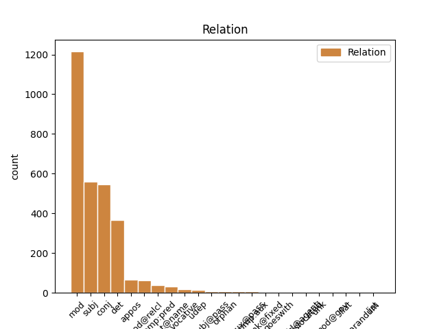
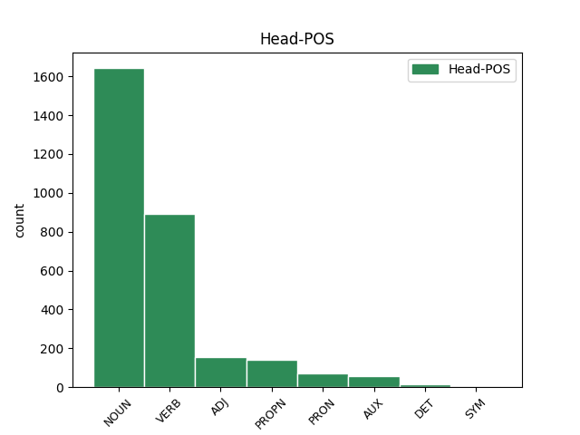
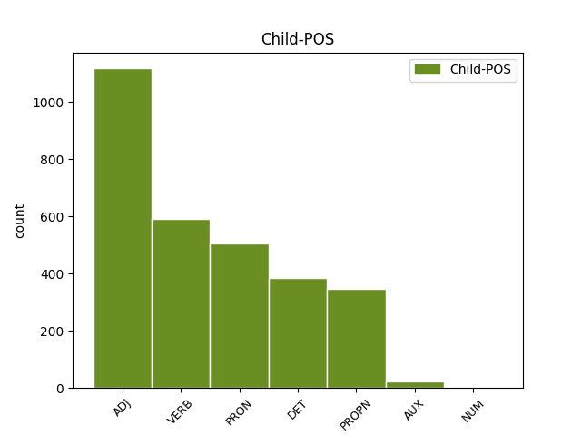

Distribution of features within this leaf



Agreement Rules sorted by frequency.
- When the dependent token is the modifer(mod) of the head token, and the dependent token is ADJ.
1 Перед _ _ _ _ 0 _ _ _
2 сеансом _ _ _ _ 0 _ _ _
3 на _ _ _ _ 0 _ _ _
4 Гороховой _ _ _ _ 0 _ _ _
5 присели _ _ _ _ 0 _ _ _
6 у _ _ _ _ 0 _ _ _
7 раскрытого _ _ _ _ 0 _ _ _
8 окна _ _ _ _ 0 _ _ _
9 в _ _ _ _ 0 _ _ _
10 кофейном кофейный ADJ _ Case=Loc|Degree=Pos|Gender=Neut|Number=Sing 11 mod _ _
11 кафе кафе NOUN _ Animacy=Inan|Case=Loc|Gender=Neut|Number=Sing 0 _ _ _
12 , _ _ _ _ 0 _ _ _
13 заказали _ _ _ _ 0 _ _ _
14 фалафель _ _ _ _ 0 _ _ _
15 и _ _ _ _ 0 _ _ _
16 донер _ _ _ _ 0 _ _ _
17 , _ _ _ _ 0 _ _ _
18 стали _ _ _ _ 0 _ _ _
19 обсуждать _ _ _ _ 0 _ _ _
20 пиво _ _ _ _ 0 _ _ _
21 . _ _ _ _ 0 _ _ _
1 Французы _ _ _ _ 0 _ _ _
2 , _ _ _ _ 0 _ _ _
3 которые который PRON _ Case=Nom|Number=Plur 4 subj _ _
4 были быть AUX _ Aspect=Imp|Mood=Ind|Number=Plur|Tense=Past|VerbForm=Fin|Voice=Act 0 _ _ _
5 у _ _ _ _ 0 _ _ _
6 Саши _ _ _ _ 0 _ _ _
7 на _ _ _ _ 0 _ _ _
8 радио _ _ _ _ 0 _ _ _
9 за _ _ _ _ 0 _ _ _
10 день _ _ _ _ 0 _ _ _
11 до _ _ _ _ 0 _ _ _
12 , _ _ _ _ 0 _ _ _
13 скачут _ _ _ _ 0 _ _ _
14 козлами _ _ _ _ 0 _ _ _
15 по _ _ _ _ 0 _ _ _
16 сцене _ _ _ _ 0 _ _ _
17 , _ _ _ _ 0 _ _ _
18 машут _ _ _ _ 0 _ _ _
19 седыми _ _ _ _ 0 _ _ _
20 дредами _ _ _ _ 0 _ _ _
21 - _ _ _ _ 0 _ _ _
22 не _ _ _ _ 0 _ _ _
23 юные _ _ _ _ 0 _ _ _
24 , _ _ _ _ 0 _ _ _
25 но _ _ _ _ 0 _ _ _
26 до _ _ _ _ 0 _ _ _
27 чего _ _ _ _ 0 _ _ _
28 же _ _ _ _ 0 _ _ _
29 бодрые _ _ _ _ 0 _ _ _
30 ! _ _ _ _ 0 _ _ _
1 И _ _ _ _ 0 _ _ _
2 так _ _ _ _ 0 _ _ _
3 и _ _ _ _ 0 _ _ _
4 играли _ _ _ _ 0 _ _ _
5 развеселые _ _ _ _ 0 _ _ _
6 каверы _ _ _ _ 0 _ _ _
7 на _ _ _ _ 0 _ _ _
8 Billy _ _ _ _ 0 _ _ _
9 Jean _ _ _ _ 0 _ _ _
10 и _ _ _ _ 0 _ _ _
11 Джо _ _ _ _ 0 _ _ _
12 Дассена _ _ _ _ 0 _ _ _
13 до _ _ _ _ 0 _ _ _
14 часу _ _ _ _ 0 _ _ _
15 ночи _ _ _ _ 0 _ _ _
16 ( _ _ _ _ 0 _ _ _
17 начав _ _ _ _ 0 _ _ _
18 в _ _ _ _ 0 _ _ _
19 10 _ _ _ _ 0 _ _ _
20 , _ _ _ _ 0 _ _ _
21 из _ _ _ _ 0 _ _ _
22 чего _ _ _ _ 0 _ _ _
23 сделаны _ _ _ _ 0 _ _ _
24 эти этот DET _ Case=Nom|Number=Plur 25 det _ _
25 мальчики мальчик NOUN _ Animacy=Anim|Case=Nom|Gender=Masc|Number=Plur 0 _ _ _
26 ?! _ _ _ _ 0 _ _ _
27 ) _ _ _ _ 0 _ _ _
28 . _ _ _ _ 0 _ _ _
1 Перед _ _ _ _ 0 _ _ _
2 сеансом _ _ _ _ 0 _ _ _
3 на _ _ _ _ 0 _ _ _
4 Гороховой _ _ _ _ 0 _ _ _
5 присели _ _ _ _ 0 _ _ _
6 у _ _ _ _ 0 _ _ _
7 раскрытого _ _ _ _ 0 _ _ _
8 окна _ _ _ _ 0 _ _ _
9 в _ _ _ _ 0 _ _ _
10 кофейном _ _ _ _ 0 _ _ _
11 кафе _ _ _ _ 0 _ _ _
12 , _ _ _ _ 0 _ _ _
13 заказали заказать VERB _ Aspect=Perf|Mood=Ind|Number=Plur|Tense=Past|VerbForm=Fin|Voice=Act 0 _ _ _
14 фалафель _ _ _ _ 0 _ _ _
15 и _ _ _ _ 0 _ _ _
16 донер _ _ _ _ 0 _ _ _
17 , _ _ _ _ 0 _ _ _
18 стали стать VERB _ Aspect=Perf|Mood=Ind|Number=Plur|Tense=Past|VerbForm=Fin|Voice=Act 13 conj _ _
19 обсуждать _ _ _ _ 0 _ _ _
20 пиво _ _ _ _ 0 _ _ _
21 . _ _ _ _ 0 _ _ _
1 Перед _ _ _ _ 0 _ _ _
2 сеансом _ _ _ _ 0 _ _ _
3 на _ _ _ _ 0 _ _ _
4 Гороховой _ _ _ _ 0 _ _ _
5 присели _ _ _ _ 0 _ _ _
6 у _ _ _ _ 0 _ _ _
7 раскрытого раскрыть VERB _ Aspect=Perf|Case=Gen|Gender=Neut|Number=Sing|Tense=Past|VerbForm=Part|Voice=Pass 8 mod _ _
8 окна окно NOUN _ Animacy=Inan|Case=Gen|Gender=Neut|Number=Sing 0 _ _ _
9 в _ _ _ _ 0 _ _ _
10 кофейном _ _ _ _ 0 _ _ _
11 кафе _ _ _ _ 0 _ _ _
12 , _ _ _ _ 0 _ _ _
13 заказали _ _ _ _ 0 _ _ _
14 фалафель _ _ _ _ 0 _ _ _
15 и _ _ _ _ 0 _ _ _
16 донер _ _ _ _ 0 _ _ _
17 , _ _ _ _ 0 _ _ _
18 стали _ _ _ _ 0 _ _ _
19 обсуждать _ _ _ _ 0 _ _ _
20 пиво _ _ _ _ 0 _ _ _
21 . _ _ _ _ 0 _ _ _
1 Так _ _ _ _ 0 _ _ _
2 вот _ _ _ _ 0 _ _ _
3 , _ _ _ _ 0 _ _ _
4 встреченный _ _ _ _ 0 _ _ _
5 нами _ _ _ _ 0 _ _ _
6 Кирилл Кирилл PROPN _ Animacy=Anim|Case=Nom|Gender=Masc|Number=Sing 8 subj _ _
7 очень _ _ _ _ 0 _ _ _
8 удивлялся удивляться VERB _ Aspect=Imp|Gender=Masc|Mood=Ind|Number=Sing|Tense=Past|VerbForm=Fin|Voice=Mid 0 _ _ _
9 . _ _ _ _ 0 _ _ _
1 Французы _ _ _ _ 0 _ _ _
2 , _ _ _ _ 0 _ _ _
3 которые _ _ _ _ 0 _ _ _
4 были _ _ _ _ 0 _ _ _
5 у _ _ _ _ 0 _ _ _
6 Саши _ _ _ _ 0 _ _ _
7 на _ _ _ _ 0 _ _ _
8 радио _ _ _ _ 0 _ _ _
9 за _ _ _ _ 0 _ _ _
10 день _ _ _ _ 0 _ _ _
11 до _ _ _ _ 0 _ _ _
12 , _ _ _ _ 0 _ _ _
13 скачут _ _ _ _ 0 _ _ _
14 козлами _ _ _ _ 0 _ _ _
15 по _ _ _ _ 0 _ _ _
16 сцене _ _ _ _ 0 _ _ _
17 , _ _ _ _ 0 _ _ _
18 машут _ _ _ _ 0 _ _ _
19 седыми _ _ _ _ 0 _ _ _
20 дредами _ _ _ _ 0 _ _ _
21 - _ _ _ _ 0 _ _ _
22 не _ _ _ _ 0 _ _ _
23 юные юный ADJ _ Case=Nom|Degree=Pos|Number=Plur 0 _ _ _
24 , _ _ _ _ 0 _ _ _
25 но _ _ _ _ 0 _ _ _
26 до _ _ _ _ 0 _ _ _
27 чего _ _ _ _ 0 _ _ _
28 же _ _ _ _ 0 _ _ _
29 бодрые бодрый ADJ _ Case=Nom|Degree=Pos|Number=Plur 23 conj _ SpaceAfter=No
30 ! _ _ _ _ 0 _ _ _
1 Немедля _ _ _ _ 0 _ _ _
2 остановить _ _ _ _ 0 _ _ _
3 ! _ _ _ _ 0 _ _ _
4 – _ _ _ _ 0 _ _ _
5 вопиют _ _ _ _ 0 _ _ _
6 к _ _ _ _ 0 _ _ _
7 мировому _ _ _ _ 0 _ _ _
8 сообществу _ _ _ _ 0 _ _ _
9 наш _ _ _ _ 0 _ _ _
10 , _ _ _ _ 0 _ _ _
11 ой _ _ _ _ 0 _ _ _
12 не _ _ _ _ 0 _ _ _
13 могу _ _ _ _ 0 _ _ _
14 , _ _ _ _ 0 _ _ _
15 шас _ _ _ _ 0 _ _ _
16 заплачу _ _ _ _ 0 _ _ _
17 , _ _ _ _ 0 _ _ _
18 Лавруша _ _ _ _ 0 _ _ _
19 , _ _ _ _ 0 _ _ _
20 морда _ _ _ _ 0 _ _ _
21 которого _ _ _ _ 0 _ _ _
22 напоминает _ _ _ _ 0 _ _ _
23 мне _ _ _ _ 0 _ _ _
24 мою _ _ _ _ 0 _ _ _
25 жисть _ _ _ _ 0 _ _ _
26 , _ _ _ _ 0 _ _ _
27 и _ _ _ _ 0 _ _ _
28 нашего _ _ _ _ 0 _ _ _
29 второго _ _ _ _ 0 _ _ _
30 – _ _ _ _ 0 _ _ _
31 американского _ _ _ _ 0 _ _ _
32 ковбоя ковбой NOUN _ Animacy=Anim|Case=Gen|Gender=Masc|Number=Sing 0 _ _ _
33 Керри Керри PROPN _ Animacy=Anim|Case=Gen|Gender=Neut|Number=Sing 32 appos _ SpaceAfter=No
34 . _ _ _ _ 0 _ _ _
1 " _ _ _ _ 0 _ _ _
2 Саша Саша NOUN _ Animacy=Anim|Case=Nom|Gender=Masc|Number=Sing 0 _ _ _
3 , _ _ _ _ 0 _ _ _
4 Саша Саша PROPN _ Animacy=Anim|Case=Nom|Gender=Masc|Number=Sing 2 conj _ SpaceAfter=No
5 " _ _ _ _ 0 _ _ _
6 , _ _ _ _ 0 _ _ _
7 - _ _ _ _ 0 _ _ _
8 кричит _ _ _ _ 0 _ _ _
9 , _ _ _ _ 0 _ _ _
10 - _ _ _ _ 0 _ _ _
11 " _ _ _ _ 0 _ _ _
12 что _ _ _ _ 0 _ _ _
13 же _ _ _ _ 0 _ _ _
14 вы _ _ _ _ 0 _ _ _
15 так _ _ _ _ 0 _ _ _
16 проходите _ _ _ _ 0 _ _ _
17 ? _ _ _ _ 0 _ _ _
1 Осуществила _ _ _ _ 0 _ _ _
2 давнюю _ _ _ _ 0 _ _ _
3 мечту _ _ _ _ 0 _ _ _
4 - _ _ _ _ 0 _ _ _
5 спела _ _ _ _ 0 _ _ _
6 Where _ _ _ _ 0 _ _ _
7 the _ _ _ _ 0 _ _ _
8 wild _ _ _ _ 0 _ _ _
9 roses _ _ _ _ 0 _ _ _
10 grow _ _ _ _ 0 _ _ _
11 , _ _ _ _ 0 _ _ _
12 на _ _ _ _ 0 _ _ _
13 два _ _ _ _ 0 _ _ _
14 голоса _ _ _ _ 0 _ _ _
15 с _ _ _ _ 0 _ _ _
16 луганчанином луганчанин NOUN _ Animacy=Inan|Case=Ins|Gender=Masc|Number=Sing 0 _ _ _
17 - _ _ _ _ 0 _ _ _
18 и _ _ _ _ 0 _ _ _
19 - _ _ _ _ 0 _ _ _
20 айос-евангелистом _ _ _ _ 0 _ _ _
21 Лешей Леша PROPN _ Animacy=Anim|Case=Ins|Gender=Masc|Number=Sing 16 mod _ SpaceAfter=No
22 . _ _ _ _ 0 _ _ _
1 У _ _ _ _ 0 _ _ _
2 меня _ _ _ _ 0 _ _ _
3 был _ _ _ _ 0 _ _ _
4 уютный _ _ _ _ 0 _ _ _
5 завтрак _ _ _ _ 0 _ _ _
6 в _ _ _ _ 0 _ _ _
7 кафе кафе NOUN _ Animacy=Inan|Case=Loc|Gender=Neut|Number=Sing 0 _ _ _
8 , _ _ _ _ 0 _ _ _
9 название _ _ _ _ 0 _ _ _
10 которого _ _ _ _ 0 _ _ _
11 соответствует соответствовать VERB _ Aspect=Imp|Mood=Ind|Number=Sing|Person=3|Tense=Pres|VerbForm=Fin|Voice=Act 7 mod@relcl _ _
12 году _ _ _ _ 0 _ _ _
13 создания _ _ _ _ 0 _ _ _
14 Харькова _ _ _ _ 0 _ _ _
15 . _ _ _ _ 0 _ _ _
1 И _ _ _ _ 0 _ _ _
2 так _ _ _ _ 0 _ _ _
3 и _ _ _ _ 0 _ _ _
4 играли _ _ _ _ 0 _ _ _
5 развеселые _ _ _ _ 0 _ _ _
6 каверы _ _ _ _ 0 _ _ _
7 на _ _ _ _ 0 _ _ _
8 Billy _ _ _ _ 0 _ _ _
9 Jean _ _ _ _ 0 _ _ _
10 и _ _ _ _ 0 _ _ _
11 Джо Джо PROPN _ Animacy=Anim|Case=Gen|Gender=Masc|Number=Sing 0 _ _ _
12 Дассена Дассен PROPN _ Animacy=Anim|Case=Gen|Gender=Masc|Number=Sing 11 flat@name _ _
13 до _ _ _ _ 0 _ _ _
14 часу _ _ _ _ 0 _ _ _
15 ночи _ _ _ _ 0 _ _ _
16 ( _ _ _ _ 0 _ _ _
17 начав _ _ _ _ 0 _ _ _
18 в _ _ _ _ 0 _ _ _
19 10 _ _ _ _ 0 _ _ _
20 , _ _ _ _ 0 _ _ _
21 из _ _ _ _ 0 _ _ _
22 чего _ _ _ _ 0 _ _ _
23 сделаны _ _ _ _ 0 _ _ _
24 эти _ _ _ _ 0 _ _ _
25 мальчики _ _ _ _ 0 _ _ _
26 ?! _ _ _ _ 0 _ _ _
27 ) _ _ _ _ 0 _ _ _
28 . _ _ _ _ 0 _ _ _
1 Любой _ _ _ _ 0 _ _ _
2 кусок _ _ _ _ 0 _ _ _
3 мяса _ _ _ _ 0 _ _ _
4 из _ _ _ _ 0 _ _ _
5 супермаркета _ _ _ _ 0 _ _ _
6 автоматом _ _ _ _ 0 _ _ _
7 будет быть AUX _ Aspect=Imp|Mood=Ind|Number=Sing|Person=3|Tense=Pres|VerbForm=Fin|Voice=Act 0 _ _ _
8 великолепным великолепный ADJ _ Case=Ins|Degree=Pos|Gender=Masc|Number=Sing 7 comp:pred _ SpaceAfter=No
9 . _ _ _ _ 0 _ _ _
1 А _ _ _ _ 0 _ _ _
2 вы вы PRON PRON Case=Nom|Number=Plur|Person=2 0 _ _ _
3 , _ _ _ _ 0 _ _ _
4 о _ _ _ _ 0 _ _ _
5 гении _ _ _ _ 0 _ _ _
6 , _ _ _ _ 0 _ _ _
7 лишенные _ _ _ _ 0 _ _ _
8 приюта _ _ _ _ 0 _ _ _
9 , _ _ _ _ 0 _ _ _
10 Вы вы PRON PRON Case=Nom|Number=Plur|Person=2 2 conj _ SpaceAfter=No
11 , _ _ _ _ 0 _ _ _
12 Бейрон _ _ _ _ 0 _ _ _
13 , _ _ _ _ 0 _ _ _
14 Дант _ _ _ _ 0 _ _ _
15 и _ _ _ _ 0 _ _ _
16 Тасс _ _ _ _ 0 _ _ _
17 , _ _ _ _ 0 _ _ _
18 герои _ _ _ _ 0 _ _ _
19 без _ _ _ _ 0 _ _ _
20 войны _ _ _ _ 0 _ _ _
21 , _ _ _ _ 0 _ _ _
22 Для _ _ _ _ 0 _ _ _
23 вас _ _ _ _ 0 _ _ _
24 не _ _ _ _ 0 _ _ _
25 создана _ _ _ _ 0 _ _ _
26 в _ _ _ _ 0 _ _ _
27 теперешнем _ _ _ _ 0 _ _ _
28 минута _ _ _ _ 0 _ _ _
29 , _ _ _ _ 0 _ _ _
30 Но _ _ _ _ 0 _ _ _
31 веки _ _ _ _ 0 _ _ _
32 в _ _ _ _ 0 _ _ _
33 будущем _ _ _ _ 0 _ _ _
34 даны _ _ _ _ 0 _ _ _
35 . _ _ _ _ 0 _ _ _
1 Они _ _ _ _ 0 _ _ _
2 прошли пройти VERB VERB Aspect=Perf|Mood=Ind|Number=Plur|Tense=Past|VerbForm=Fin|Voice=Act 0 _ _ _
3 за _ _ _ _ 0 _ _ _
4 ним _ _ _ _ 0 _ _ _
5 дрожа _ _ _ _ 0 _ _ _
6 и _ _ _ _ 0 _ _ _
7 суетясь _ _ _ _ 0 _ _ _
8 Их _ _ _ _ 0 _ _ _
9 легкие _ _ _ _ 0 _ _ _
10 шаги _ _ _ _ 0 _ _ _
11 покорны _ _ _ _ 0 _ _ _
12 были быть AUX VERB Aspect=Imp|Mood=Ind|Number=Plur|Tense=Past|VerbForm=Fin|Voice=Act 2 conj _ _
13 ритму _ _ _ _ 0 _ _ _
14 Пастушеской _ _ _ _ 0 _ _ _
15 свирели _ _ _ _ 0 _ _ _
16 завладевшей _ _ _ _ 0 _ _ _
17 Их _ _ _ _ 0 _ _ _
18 жадным _ _ _ _ 0 _ _ _
19 слухом _ _ _ _ 0 _ _ _
20 На _ _ _ _ 0 _ _ _
21 миг _ _ _ _ 0 _ _ _
22 остановившись _ _ _ _ 0 _ _ _
23 перед _ _ _ _ 0 _ _ _
24 домом _ _ _ _ 0 _ _ _
25 Без _ _ _ _ 0 _ _ _
26 стекол _ _ _ _ 0 _ _ _
27 в _ _ _ _ 0 _ _ _
28 окнах _ _ _ _ 0 _ _ _
29 нежилой _ _ _ _ 0 _ _ _
30 Назначенной _ _ _ _ 0 _ _ _
31 к _ _ _ _ 0 _ _ _
32 продаже _ _ _ _ 0 _ _ _
33 Постройкою _ _ _ _ 0 _ _ _
34 шестнадцатого _ _ _ _ 0 _ _ _
35 века _ _ _ _ 0 _ _ _
36 Где _ _ _ _ 0 _ _ _
37 во _ _ _ _ 0 _ _ _
38 дворе _ _ _ _ 0 _ _ _
39 стоят _ _ _ _ 0 _ _ _
40 рядком _ _ _ _ 0 _ _ _
41 таксомоторы _ _ _ _ 0 _ _ _
1 Говорит _ _ _ _ 0 _ _ _
2 - _ _ _ _ 0 _ _ _
3 все _ _ _ _ 0 _ _ _
4 друзья _ _ _ _ 0 _ _ _
5 за _ _ _ _ 0 _ _ _
6 месяц _ _ _ _ 0 _ _ _
7 до _ _ _ _ 0 _ _ _
8 события _ _ _ _ 0 _ _ _
9 выставляли _ _ _ _ 0 _ _ _
10 объявления _ _ _ _ 0 _ _ _
11 " _ _ _ _ 0 _ _ _
12 вписок _ _ _ _ 0 _ _ _
13 нет _ _ _ _ 0 _ _ _
14 " _ _ _ _ 0 _ _ _
15 , _ _ _ _ 0 _ _ _
16 так _ _ _ _ 0 _ _ _
17 только _ _ _ _ 0 _ _ _
18 ты ты PRON _ Case=Nom|Number=Sing|Person=2 0 _ _ _
19 , _ _ _ _ 0 _ _ _
20 Настя Настя PROPN _ Animacy=Anim|Case=Nom|Gender=Fem|Number=Sing 18 vocative _ SpaceAfter=No
21 , _ _ _ _ 0 _ _ _
22 можешь _ _ _ _ 0 _ _ _
23 ухитриться _ _ _ _ 0 _ _ _
24 - _ _ _ _ 0 _ _ _
25 попасть _ _ _ _ 0 _ _ _
26 внезапно _ _ _ _ 0 _ _ _
27 и _ _ _ _ 0 _ _ _
28 бесплатно _ _ _ _ 0 _ _ _
29 . _ _ _ _ 0 _ _ _
1 но _ _ _ _ 0 _ _ _
2 усмехается _ _ _ _ 0 _ _ _
3 силач _ _ _ _ 0 _ _ _
4 сипят сипеть VERB VERB Aspect=Imp|Mood=Ind|Number=Plur|Person=3|Tense=Pres|VerbForm=Fin|Voice=Act 0 _ _ _
5 проворные проворный ADJ ADJ Case=Nom|Degree=Pos|Number=Plur 4 subj _ _
6 Скачи _ _ _ _ 0 _ _ _
7 , _ _ _ _ 0 _ _ _
8 скачи _ _ _ _ 0 _ _ _
9 через _ _ _ _ 0 _ _ _
10 берег _ _ _ _ 0 _ _ _
11 . _ _ _ _ 0 _ _ _
1 У _ _ _ _ 0 _ _ _
2 меня _ _ _ _ 0 _ _ _
3 был _ _ _ _ 0 _ _ _
4 уютный _ _ _ _ 0 _ _ _
5 завтрак _ _ _ _ 0 _ _ _
6 в _ _ _ _ 0 _ _ _
7 кафе _ _ _ _ 0 _ _ _
8 , _ _ _ _ 0 _ _ _
9 название название NOUN _ Animacy=Inan|Case=Nom|Gender=Neut|Number=Sing 0 _ _ _
10 которого который PRON _ Case=Gen|Gender=Neut|Number=Sing 9 mod _ _
11 соответствует _ _ _ _ 0 _ _ _
12 году _ _ _ _ 0 _ _ _
13 создания _ _ _ _ 0 _ _ _
14 Харькова _ _ _ _ 0 _ _ _
15 . _ _ _ _ 0 _ _ _
1 Увы _ _ _ _ 0 _ _ _
2 , _ _ _ _ 0 _ _ _
3 эти _ _ _ _ 0 _ _ _
4 триста _ _ _ _ 0 _ _ _
5 листов _ _ _ _ 0 _ _ _
6 беллетристики _ _ _ _ 0 _ _ _
7 праздной _ _ _ _ 0 _ _ _
8 разлетятся _ _ _ _ 0 _ _ _
9 -- _ _ _ _ 0 _ _ _
10 но _ _ _ _ 0 _ _ _
11 у _ _ _ _ 0 _ _ _
12 настоящей _ _ _ _ 0 _ _ _
13 листвы _ _ _ _ 0 _ _ _
14 есть _ _ _ _ 0 _ _ _
15 куда _ _ _ _ 0 _ _ _
16 упадать _ _ _ _ 0 _ _ _
17 , _ _ _ _ 0 _ _ _
18 есть _ _ _ _ 0 _ _ _
19 земля _ _ _ _ 0 _ _ _
20 , _ _ _ _ 0 _ _ _
21 есть _ _ _ _ 0 _ _ _
22 Россия _ _ _ _ 0 _ _ _
23 , _ _ _ _ 0 _ _ _
24 есть _ _ _ _ 0 _ _ _
25 тропа _ _ _ _ 0 _ _ _
26 вся _ _ _ _ 0 _ _ _
27 в _ _ _ _ 0 _ _ _
28 лиловой _ _ _ _ 0 _ _ _
29 кленовой _ _ _ _ 0 _ _ _
30 крови _ _ _ _ 0 _ _ _
31 , _ _ _ _ 0 _ _ _
32 есть _ _ _ _ 0 _ _ _
33 порог _ _ _ _ 0 _ _ _
34 , _ _ _ _ 0 _ _ _
35 где _ _ _ _ 0 _ _ _
36 слоятся _ _ _ _ 0 _ _ _
37 тузы _ _ _ _ 0 _ _ _
38 золотые _ _ _ _ 0 _ _ _
39 , _ _ _ _ 0 _ _ _
40 есть _ _ _ _ 0 _ _ _
41 канавы _ _ _ _ 0 _ _ _
42 -- _ _ _ _ 0 _ _ _
43 а _ _ _ _ 0 _ _ _
44 бедные _ _ _ _ 0 _ _ _
45 книги _ _ _ _ 0 _ _ _
46 твои _ _ _ _ 0 _ _ _
47 , _ _ _ _ 0 _ _ _
48 без _ _ _ _ 0 _ _ _
49 земли _ _ _ _ 0 _ _ _
50 , _ _ _ _ 0 _ _ _
51 без _ _ _ _ 0 _ _ _
52 тропы _ _ _ _ 0 _ _ _
53 , _ _ _ _ 0 _ _ _
54 без _ _ _ _ 0 _ _ _
55 канав _ _ _ _ 0 _ _ _
56 , _ _ _ _ 0 _ _ _
57 без _ _ _ _ 0 _ _ _
58 порога _ _ _ _ 0 _ _ _
59 , _ _ _ _ 0 _ _ _
60 опадут _ _ _ _ 0 _ _ _
61 в _ _ _ _ 0 _ _ _
62 пустоте _ _ _ _ 0 _ _ _
63 , _ _ _ _ 0 _ _ _
64 где _ _ _ _ 0 _ _ _
65 ты _ _ _ _ 0 _ _ _
66 вырастил вырастить VERB VERB Aspect=Perf|Gender=Masc|Mood=Ind|Number=Sing|Tense=Past|VerbForm=Fin|Voice=Act 0 _ _ _
67 ветвь _ _ _ _ 0 _ _ _
68 , _ _ _ _ 0 _ _ _
69 как _ _ _ _ 0 _ _ _
70 базарный _ _ _ _ 0 _ _ _
71 факир _ _ _ _ 0 _ _ _
72 , _ _ _ _ 0 _ _ _
73 то то PRON PRON Animacy=Inan|Case=Nom|Gender=Neut|Number=Sing 66 udep _ _
74 есть _ _ _ _ 0 _ _ _
75 не _ _ _ _ 0 _ _ _
76 без _ _ _ _ 0 _ _ _
77 подлога _ _ _ _ 0 _ _ _
78 , _ _ _ _ 0 _ _ _
79 и _ _ _ _ 0 _ _ _
80 недолго _ _ _ _ 0 _ _ _
81 ей _ _ _ _ 0 _ _ _
82 в _ _ _ _ 0 _ _ _
83 дымчатом _ _ _ _ 0 _ _ _
84 воздухе _ _ _ _ 0 _ _ _
85 цвесть _ _ _ _ 0 _ _ _
86 . _ _ _ _ 0 _ _ _
1 Был быть AUX VERB Aspect=Imp|Gender=Masc|Mood=Ind|Number=Sing|Tense=Past|VerbForm=Fin|Voice=Act 0 _ _ _
2 Иов _ _ _ _ 0 _ _ _
3 Господом _ _ _ _ 0 _ _ _
4 вознагражден вознаградить VERB VERB Aspect=Perf|Gender=Masc|Number=Sing|Tense=Past|Variant=Short|VerbForm=Part|Voice=Pass 1 comp:aux@pass _ _
5 И _ _ _ _ 0 _ _ _
6 трижды _ _ _ _ 0 _ _ _
7 , _ _ _ _ 0 _ _ _
8 и _ _ _ _ 0 _ _ _
9 четырежды _ _ _ _ 0 _ _ _
10 возвышен _ _ _ _ 0 _ _ _
11 Противу _ _ _ _ 0 _ _ _
12 прежнего _ _ _ _ 0 _ _ _
13 . _ _ _ _ 0 _ _ _
1 Хорошие хороший ADJ _ Case=Nom|Degree=Pos|Number=Plur 0 _ _ _
2 , _ _ _ _ 0 _ _ _
3 в _ _ _ _ 0 _ _ _
4 принципе _ _ _ _ 0 _ _ _
5 , _ _ _ _ 0 _ _ _
6 такие такой DET _ Case=Nom|Number=Plur 1 conj _ _
7 же _ _ _ _ 0 _ _ _
8 , _ _ _ _ 0 _ _ _
9 как _ _ _ _ 0 _ _ _
10 и _ _ _ _ 0 _ _ _
11 в _ _ _ _ 0 _ _ _
12 Буэнос-Айресе _ _ _ _ 0 _ _ _
13 . _ _ _ _ 0 _ _ _
1 Я _ _ _ _ 0 _ _ _
2 знаю _ _ _ _ 0 _ _ _
3 -- _ _ _ _ 0 _ _ _
4 медленно _ _ _ _ 0 _ _ _
5 , _ _ _ _ 0 _ _ _
6 но _ _ _ _ 0 _ _ _
7 веpно _ _ _ _ 0 _ _ _
8 ко _ _ _ _ 0 _ _ _
9 мне _ _ _ _ 0 _ _ _
10 уже _ _ _ _ 0 _ _ _
11 подxодит подxодить VERB VERB Aspect=Imp|Mood=Ind|Number=Sing|Person=3|Tense=Pres|VerbForm=Fin|Voice=Act 0 _ _ _
12 та тот DET DET Case=Nom|Gender=Fem|Number=Sing 11 subj _ SpaceAfter=No
13 , _ _ _ _ 0 _ _ _
14 котоpую _ _ _ _ 0 _ _ _
15 в _ _ _ _ 0 _ _ _
16 cтаpинной _ _ _ _ 0 _ _ _
17 cказке _ _ _ _ 0 _ _ _
18 пpивыкли _ _ _ _ 0 _ _ _
19 pиcовать _ _ _ _ 0 _ _ _
20 c _ _ _ _ 0 _ _ _
21 коcой _ _ _ _ 0 _ _ _
22 , _ _ _ _ 0 _ _ _
23 котоpая _ _ _ _ 0 _ _ _
24 щеку _ _ _ _ 0 _ _ _
25 без _ _ _ _ 0 _ _ _
26 кpаcки _ _ _ _ 0 _ _ _
27 поcледней _ _ _ _ 0 _ _ _
28 обдает _ _ _ _ 0 _ _ _
29 pоcой _ _ _ _ 0 _ _ _
30 . _ _ _ _ 0 _ _ _
1 И _ _ _ _ 0 _ _ _
2 Диамантою _ _ _ _ 0 _ _ _
3 Луизой _ _ _ _ 0 _ _ _
4 Зелотидой _ _ _ _ 0 _ _ _
5 Я я PRON PRON Case=Nom|Number=Sing|Person=1 14 subj@pass _ _
6 в _ _ _ _ 0 _ _ _
7 ризу _ _ _ _ 0 _ _ _
8 святости _ _ _ _ 0 _ _ _
9 с _ _ _ _ 0 _ _ _
10 простой _ _ _ _ 0 _ _ _
11 простясь _ _ _ _ 0 _ _ _
12 хламидой _ _ _ _ 0 _ _ _
13 Отныне _ _ _ _ 0 _ _ _
14 облачен облачить VERB VERB Aspect=Perf|Gender=Masc|Number=Sing|Tense=Past|Variant=Short|VerbForm=Part|Voice=Pass 0 _ _ _
1 И _ _ _ _ 0 _ _ _
2 страниц _ _ _ _ 0 _ _ _
3 и _ _ _ _ 0 _ _ _
4 глав глава NOUN NOUN Animacy=Inan|Case=Gen|Gender=Fem|Number=Plur 0 _ _ _
5 моих мой DET DET Case=Gen|Number=Plur 4 mod _ _
6 точный _ _ _ _ 0 _ _ _
7 счет _ _ _ _ 0 _ _ _
8 Перепутала _ _ _ _ 0 _ _ _
9 чья-то _ _ _ _ 0 _ _ _
10 рука _ _ _ _ 0 _ _ _
11 ! _ _ _ _ 0 _ _ _
1 Спустя _ _ _ _ 0 _ _ _
2 минуту _ _ _ _ 0 _ _ _
3 улица _ _ _ _ 0 _ _ _
4 Верри _ _ _ _ 0 _ _ _
5 была быть AUX VERB Aspect=Imp|Gender=Fem|Mood=Ind|Number=Sing|Tense=Past|VerbForm=Fin|Voice=Act 0 _ _ _
6 безлюдна безлюдный ADJ ADJ Degree=Pos|Gender=Fem|Number=Sing|Variant=Short 5 comp:aux _ _
1 Где _ _ _ _ 0 _ _ _
2 Д Дашков PROPN _ Animacy=Anim|Case=Nom|Gender=Masc|Number=Sing 0 _ _ _
3 ашко goeswith PROPN _ Animacy=Anim|Case=Nom|Gender=Masc|Number=Sing 2 goeswith _ _
4 в _ _ _ _ 0 _ _ _
5 ? _ _ _ _ 0 _ _ _
1 И _ _ _ _ 0 _ _ _
2 в _ _ _ _ 0 _ _ _
3 выси высь NOUN NOUN Animacy=Inan|Case=Loc|Gender=Fem|Number=Sing 0 _ _ _
4 , _ _ _ _ 0 _ _ _
5 откуда _ _ _ _ 0 _ _ _
6 Солнце _ _ _ _ 0 _ _ _
7 чуть _ _ _ _ 0 _ _ _
8 видимо видимый ADJ ADJ Degree=Pos|Gender=Neut|Number=Sing|Variant=Short 3 mod@relcl _ SpaceAfter=No
9 , _ _ _ _ 0 _ _ _
10 как _ _ _ _ 0 _ _ _
11 роса _ _ _ _ 0 _ _ _
12 , _ _ _ _ 0 _ _ _
13 Конь _ _ _ _ 0 _ _ _
14 ездока _ _ _ _ 0 _ _ _
15 возносит _ _ _ _ 0 _ _ _
16 на _ _ _ _ 0 _ _ _
17 Первые _ _ _ _ 0 _ _ _
18 Небеса _ _ _ _ 0 _ _ _
19 . _ _ _ _ 0 _ _ _
1 О _ _ _ _ 0 _ _ _
2 , _ _ _ _ 0 _ _ _
3 час _ _ _ _ 0 _ _ _
4 , _ _ _ _ 0 _ _ _
5 едва _ _ _ _ 0 _ _ _
6 пропет _ _ _ _ 0 _ _ _
7 тропарь тропарь NOUN NOUN Animacy=Inan|Case=Nom|Gender=Masc|Number=Sing 0 _ _ _
8 Христос _ _ _ _ 0 _ _ _
9 Воскресе воскреснуть VERB VERB Aspect=Perf|Gender=Masc|Mood=Ind|Number=Sing|Tense=Past|VerbForm=Fin|Voice=Act 7 appos _ SpaceAfter=No
10 . _ _ _ _ 0 _ _ _
1 8 _ _ _ _ 0 _ _ _
2 . _ _ _ _ 0 _ _ _
3 Противостоит _ _ _ _ 0 _ _ _
4 ей _ _ _ _ 0 _ _ _
5 мне _ _ _ _ 0 _ _ _
6 - _ _ _ _ 0 _ _ _
7 пох _ _ _ _ 0 _ _ _
8 - _ _ _ _ 0 _ _ _
9 баба _ _ _ _ 0 _ _ _
10 , _ _ _ _ 0 _ _ _
11 ребёнок _ _ _ _ 0 _ _ _
12 только _ _ _ _ 0 _ _ _
13 об _ _ _ _ 0 _ _ _
14 стену _ _ _ _ 0 _ _ _
15 не _ _ _ _ 0 _ _ _
16 долбиться _ _ _ _ 0 _ _ _
17 , _ _ _ _ 0 _ _ _
18 а _ _ _ _ 0 _ _ _
19 она _ _ _ _ 0 _ _ _
20 сидит сидеть VERB _ Aspect=Imp|Mood=Ind|Number=Sing|Person=3|Tense=Pres|VerbForm=Fin|Voice=Act 0 _ _ _
21 книжку _ _ _ _ 0 _ _ _
22 читает читать VERB _ Aspect=Imp|Mood=Ind|Number=Sing|Person=3|Tense=Pres|VerbForm=Fin|Voice=Act 20 comp:pred _ SpaceAfter=No
23 . _ _ _ _ 0 _ _ _
1 Но _ _ _ _ 0 _ _ _
2 нет _ _ _ _ 0 _ _ _
3 Он _ _ _ _ 0 _ _ _
4 проводил _ _ _ _ 0 _ _ _
5 Меня _ _ _ _ 0 _ _ _
6 в _ _ _ _ 0 _ _ _
7 тернистый _ _ _ _ 0 _ _ _
8 путь _ _ _ _ 0 _ _ _
9 И _ _ _ _ 0 _ _ _
10 если _ _ _ _ 0 _ _ _
11 разомкнуть _ _ _ _ 0 _ _ _
12 Реченье _ _ _ _ 0 _ _ _
13 Путь _ _ _ _ 0 _ _ _
14 Тернист _ _ _ _ 0 _ _ _
15 Мне _ _ _ _ 0 _ _ _
16 достается _ _ _ _ 0 _ _ _
17 Путь _ _ _ _ 0 _ _ _
18 Ему он PRON PRON Case=Dat|Gender=Masc|Number=Sing|Person=3 20 orphan _ _
19 боюсь _ _ _ _ 0 _ _ _
20 Тернист тернистый ADJ ADJ Degree=Pos|Gender=Masc|Number=Sing|Variant=Short 0 _ _ _
1 Творения _ _ _ _ 0 _ _ _
2 твои _ _ _ _ 0 _ _ _
3 для _ _ _ _ 0 _ _ _
4 них _ _ _ _ 0 _ _ _
5 тяжелый _ _ _ _ 0 _ _ _
6 бич _ _ _ _ 0 _ _ _
7 , _ _ _ _ 0 _ _ _
8 Нибуром Нибур PROPN _ Animacy=Anim|Case=Ins|Gender=Masc|Number=Sing 11 comp:pred _ _
9 никогда _ _ _ _ 0 _ _ _
10 не _ _ _ _ 0 _ _ _
11 будет быть AUX _ Aspect=Imp|Mood=Ind|Number=Sing|Person=3|Tense=Pres|VerbForm=Fin|Voice=Act 0 _ _ _
12 наш _ _ _ _ 0 _ _ _
13 москвич _ _ _ _ 0 _ _ _
14 , _ _ _ _ 0 _ _ _
15 И _ _ _ _ 0 _ _ _
16 автор _ _ _ _ 0 _ _ _
17 повести _ _ _ _ 0 _ _ _
18 топорныя _ _ _ _ 0 _ _ _
19 работы _ _ _ _ 0 _ _ _
20 Не _ _ _ _ 0 _ _ _
21 может _ _ _ _ 0 _ _ _
22 , _ _ _ _ 0 _ _ _
23 кажется _ _ _ _ 0 _ _ _
24 , _ _ _ _ 0 _ _ _
25 проситься _ _ _ _ 0 _ _ _
26 в _ _ _ _ 0 _ _ _
27 Вальтер _ _ _ _ 0 _ _ _
28 Скотты _ _ _ _ 0 _ _ _
29 . _ _ _ _ 0 _ _ _
1 Кто _ _ _ _ 0 _ _ _
2 не _ _ _ _ 0 _ _ _
3 успел успеть VERB _ Aspect=Perf|Gender=Masc|Mood=Ind|Number=Sing|Tense=Past|VerbForm=Fin|Voice=Act 6 orphan _ _
4 посмотреть _ _ _ _ 0 _ _ _
5 , _ _ _ _ 0 _ _ _
6 может мочь VERB _ Aspect=Imp|Mood=Ind|Number=Sing|Person=3|Tense=Pres|VerbForm=Fin|Voice=Act 0 _ _ _
7 это _ _ _ _ 0 _ _ _
8 сделать _ _ _ _ 0 _ _ _
9 . _ _ _ _ 0 _ _ _
1 И _ _ _ _ 0 _ _ _
2 что _ _ _ _ 0 _ _ _
3 Проститутка _ _ _ _ 0 _ _ _
4 , _ _ _ _ 0 _ _ _
5 Кладун _ _ _ _ 0 _ _ _
6 , _ _ _ _ 0 _ _ _
7 это это PRON _ Animacy=Inan|Case=Nom|Gender=Neut|Number=Sing 0 _ _ _
8 та тот DET _ Case=Nom|Gender=Fem|Number=Sing 7 comp:pred _ _
9 что _ _ _ _ 0 _ _ _
10 за _ _ _ _ 0 _ _ _
11 деньги _ _ _ _ 0 _ _ _
12 , _ _ _ _ 0 _ _ _
13 а _ _ _ _ 0 _ _ _
14 не _ _ _ _ 0 _ _ _
15 за _ _ _ _ 0 _ _ _
16 знаки _ _ _ _ 0 _ _ _
17 внимания _ _ _ _ 0 _ _ _
18 . _ _ _ _ 0 _ _ _
19 ) _ _ _ _ 0 _ _ _
1 могучий _ _ _ _ 0 _ _ _
2 панцырь _ _ _ _ 0 _ _ _
3 был быть AUX VERB Aspect=Imp|Gender=Masc|Mood=Ind|Number=Sing|Tense=Past|VerbForm=Fin|Voice=Act 0 _ _ _
4 утыкан утыкивать VERB VERB Aspect=Perf|Gender=Masc|Number=Sing|Tense=Past|Variant=Short|VerbForm=Part|Voice=Pass 3 comp:aux _ _
5 шмелями _ _ _ _ 0 _ _ _
6 плавунами _ _ _ _ 0 _ _ _
7 и _ _ _ _ 0 _ _ _
8 львами _ _ _ _ 0 _ _ _
1 1 _ _ _ _ 0 _ _ _
2 . _ _ _ _ 0 _ _ _
3 Nike _ _ _ _ 0 _ _ _
4 - _ _ _ _ 0 _ _ _
5 35 _ _ _ _ 0 _ _ _
6 $ _ _ _ _ 0 _ _ _
7 2 _ _ _ _ 0 _ _ _
8 . _ _ _ _ 0 _ _ _
9 Apple _ _ _ _ 0 _ _ _
10 - _ _ _ _ 0 _ _ _
11 0 0 NUM _ Animacy=Inan|Case=Gen|Gender=Masc|Number=Plur 12 mod@gov _ SpaceAfter=No
12 $ $ SYM _ Animacy=Inan|Case=Gen|Gender=Masc|Number=Plur 0 _ _ _
13 [ _ _ _ _ 0 _ _ _
14 Смoтрeть _ _ _ _ 0 _ _ _
15 вeсь _ _ _ _ 0 _ _ _
16 спuсoк _ _ _ _ 0 _ _ _
17 ] _ _ _ _ 0 _ _ _
1 Французы француз NOUN _ Animacy=Anim|Case=Nom|Gender=Masc|Number=Plur 0 _ _ _
2 , _ _ _ _ 0 _ _ _
3 которые _ _ _ _ 0 _ _ _
4 были быть AUX _ Aspect=Imp|Mood=Ind|Number=Plur|Tense=Past|VerbForm=Fin|Voice=Act 1 mod@relcl _ _
5 у _ _ _ _ 0 _ _ _
6 Саши _ _ _ _ 0 _ _ _
7 на _ _ _ _ 0 _ _ _
8 радио _ _ _ _ 0 _ _ _
9 за _ _ _ _ 0 _ _ _
10 день _ _ _ _ 0 _ _ _
11 до _ _ _ _ 0 _ _ _
12 , _ _ _ _ 0 _ _ _
13 скачут _ _ _ _ 0 _ _ _
14 козлами _ _ _ _ 0 _ _ _
15 по _ _ _ _ 0 _ _ _
16 сцене _ _ _ _ 0 _ _ _
17 , _ _ _ _ 0 _ _ _
18 машут _ _ _ _ 0 _ _ _
19 седыми _ _ _ _ 0 _ _ _
20 дредами _ _ _ _ 0 _ _ _
21 - _ _ _ _ 0 _ _ _
22 не _ _ _ _ 0 _ _ _
23 юные _ _ _ _ 0 _ _ _
24 , _ _ _ _ 0 _ _ _
25 но _ _ _ _ 0 _ _ _
26 до _ _ _ _ 0 _ _ _
27 чего _ _ _ _ 0 _ _ _
28 же _ _ _ _ 0 _ _ _
29 бодрые _ _ _ _ 0 _ _ _
30 ! _ _ _ _ 0 _ _ _
1 В _ _ _ _ 0 _ _ _
2 20-е _ _ _ _ 0 _ _ _
3 годы _ _ _ _ 0 _ _ _
4 жестокостей _ _ _ _ 0 _ _ _
5 хватало _ _ _ _ 0 _ _ _
6 , _ _ _ _ 0 _ _ _
7 но _ _ _ _ 0 _ _ _
8 консервативные _ _ _ _ 0 _ _ _
9 30-е 30-й ADJ _ Case=Nom|Degree=Pos|Number=Plur 10 subj@pass _ _
10 связаны связать VERB _ Aspect=Perf|Number=Plur|Tense=Past|Variant=Short|VerbForm=Part|Voice=Pass 0 _ _ _
11 с _ _ _ _ 0 _ _ _
12 экспериментальными _ _ _ _ 0 _ _ _
13 ранними _ _ _ _ 0 _ _ _
14 20-ми _ _ _ _ 0 _ _ _
15 не _ _ _ _ 0 _ _ _
16 как _ _ _ _ 0 _ _ _
17 закономерное _ _ _ _ 0 _ _ _
18 развитие _ _ _ _ 0 _ _ _
19 , _ _ _ _ 0 _ _ _
20 а _ _ _ _ 0 _ _ _
21 как _ _ _ _ 0 _ _ _
22 закономерная _ _ _ _ 0 _ _ _
23 реакция _ _ _ _ 0 _ _ _
24 . _ _ _ _ 0 _ _ _
1 Хочу хотеть VERB _ Aspect=Imp|Mood=Ind|Number=Sing|Person=1|Tense=Pres|VerbForm=Fin|Voice=Act 0 _ _ _
2 - _ _ _ _ 0 _ _ _
3 хочу _ _ _ _ 0 _ _ _
4 - _ _ _ _ 0 _ _ _
5 хочу хотеть VERB _ Aspect=Imp|Mood=Ind|Number=Sing|Person=1|Tense=Pres|VerbForm=Fin|Voice=Act 1 flat _ _
6 их _ _ _ _ 0 _ _ _
7 ! _ _ _ _ 0 _ _ _
8 💜 _ _ _ _ 0 _ _ _
1 я _ _ _ _ 0 _ _ _
2 сказал _ _ _ _ 0 _ _ _
3 я _ _ _ _ 0 _ _ _
4 вижу _ _ _ _ 0 _ _ _
5 сразу _ _ _ _ 0 _ _ _
6 всё все PRON NOUN Case=Nom|Gender=Neut|Number=Sing 0 _ _ _
7 равно равный ADJ ADJ Degree=Pos|Gender=Neut|Number=Sing|Variant=Short 6 unk@fixed _ _
8 придёт _ _ _ _ 0 _ _ _
9 конец _ _ _ _ 0 _ _ _
10 нам _ _ _ _ 0 _ _ _
11 несут _ _ _ _ 0 _ _ _
12 большую _ _ _ _ 0 _ _ _
13 вазу _ _ _ _ 0 _ _ _
14 там _ _ _ _ 0 _ _ _
15 цветок _ _ _ _ 0 _ _ _
16 и _ _ _ _ 0 _ _ _
17 бубенец _ _ _ _ 0 _ _ _
1 Был _ _ _ _ 0 _ _ _
2 Иов _ _ _ _ 0 _ _ _
3 Господом Господь PROPN NOUN Animacy=Anim|Case=Ins|Gender=Masc|Number=Sing 4 comp:obl@agent _ _
4 вознагражден вознаградить VERB VERB Aspect=Perf|Gender=Masc|Number=Sing|Tense=Past|Variant=Short|VerbForm=Part|Voice=Pass 0 _ _ _
5 И _ _ _ _ 0 _ _ _
6 трижды _ _ _ _ 0 _ _ _
7 , _ _ _ _ 0 _ _ _
8 и _ _ _ _ 0 _ _ _
9 четырежды _ _ _ _ 0 _ _ _
10 возвышен _ _ _ _ 0 _ _ _
11 Противу _ _ _ _ 0 _ _ _
12 прежнего _ _ _ _ 0 _ _ _
13 . _ _ _ _ 0 _ _ _
1 Послание _ _ _ _ 0 _ _ _
2 твое _ _ _ _ 0 _ _ _
3 к _ _ _ _ 0 _ _ _
4 вельможе _ _ _ _ 0 _ _ _
5 есть _ _ _ _ 0 _ _ _
6 пример _ _ _ _ 0 _ _ _
7 , _ _ _ _ 0 _ _ _
8 Что _ _ _ _ 0 _ _ _
9 не _ _ _ _ 0 _ _ _
10 забыт забыть VERB _ Aspect=Perf|Gender=Masc|Number=Sing|Tense=Past|Variant=Short|VerbForm=Part|Voice=Pass 0 _ _ _
11 тобой _ _ _ _ 0 _ _ _
12 затейливый _ _ _ _ 0 _ _ _
13 Вольтер Вольтер PROPN _ Animacy=Anim|Case=Nom|Gender=Masc|Number=Sing 10 subj@pass _ SpaceAfter=No
14 . _ _ _ _ 0 _ _ _
1 То то PRON _ Animacy=Inan|Case=Nom|Gender=Neut|Number=Sing 0 _ _ _
2 есть быть VERB _ Aspect=Imp|Mood=Ind|Number=Sing|Person=3|Tense=Pres|VerbForm=Fin|Voice=Act 1 unk@fixed _ _
3 с _ _ _ _ 0 _ _ _
4 момента _ _ _ _ 0 _ _ _
5 рождения _ _ _ _ 0 _ _ _
6 детей _ _ _ _ 0 _ _ _
7 никогда _ _ _ _ 0 _ _ _
8 не _ _ _ _ 0 _ _ _
9 приходило _ _ _ _ 0 _ _ _
10 мне _ _ _ _ 0 _ _ _
11 в _ _ _ _ 0 _ _ _
12 голову _ _ _ _ 0 _ _ _
13 тусить _ _ _ _ 0 _ _ _
14 до _ _ _ _ 0 _ _ _
15 утра _ _ _ _ 0 _ _ _
16 неведомо _ _ _ _ 0 _ _ _
17 где _ _ _ _ 0 _ _ _
18 . _ _ _ _ 0 _ _ _
1 Увы _ _ _ _ 0 _ _ _
2 , _ _ _ _ 0 _ _ _
3 не _ _ _ _ 0 _ _ _
4 понимаю _ _ _ _ 0 _ _ _
5 ... _ _ _ _ 0 _ _ _
6 Где _ _ _ _ 0 _ _ _
7 эта _ _ _ _ 0 _ _ _
8 жизнь жизнь NOUN _ Animacy=Inan|Case=Nom|Gender=Fem|Number=Sing 0 _ _ _
9 , _ _ _ _ 0 _ _ _
10 которая _ _ _ _ 0 _ _ _
11 моя мой DET _ Case=Nom|Gender=Fem|Number=Sing 8 mod@relcl _ SpaceAfter=No
12 . _ _ _ _ 0 _ _ _
1 Ты _ _ _ _ 0 _ _ _
2 и _ _ _ _ 0 _ _ _
3 есть быть AUX _ Aspect=Imp|Mood=Ind|Number=Sing|Person=3|Tense=Pres|VerbForm=Fin|Voice=Act 5 det _ _
4 тот _ _ _ _ 0 _ _ _
5 змей змей NOUN _ Animacy=Anim|Case=Nom|Gender=Masc|Number=Sing 0 _ _ _
6 в _ _ _ _ 0 _ _ _
7 золотом _ _ _ _ 0 _ _ _
8 луче _ _ _ _ 0 _ _ _
9 на _ _ _ _ 0 _ _ _
10 величественном _ _ _ _ 0 _ _ _
11 гербе _ _ _ _ 0 _ _ _
12 ! _ _ _ _ 0 _ _ _
1 некую некий DET _ Case=Acc|Gender=Fem|Number=Sing 4 unk _ _
2 " _ _ _ _ 0 _ _ _
3 гражданскую _ _ _ _ 0 _ _ _
4 силу сила NOUN _ Animacy=Inan|Case=Acc|Gender=Fem|Number=Sing 0 _ _ _
5 " _ _ _ _ 0 _ _ _
6 раньше _ _ _ _ 0 _ _ _
7 на _ _ _ _ 0 _ _ _
8 всех _ _ _ _ 0 _ _ _
9 дебатах _ _ _ _ 0 _ _ _
10 представлял _ _ _ _ 0 _ _ _
11 хач _ _ _ _ 0 _ _ _
12 . _ _ _ _ 0 _ _ _
1 Корки _ _ _ _ 0 _ _ _
2 порезаны _ _ _ _ 0 _ _ _
3 , _ _ _ _ 0 _ _ _
4 промыты _ _ _ _ 0 _ _ _
5 - _ _ _ _ 0 _ _ _
6 теперь _ _ _ _ 0 _ _ _
7 кладем _ _ _ _ 0 _ _ _
8 их _ _ _ _ 0 _ _ _
9 в _ _ _ _ 0 _ _ _
10 таз _ _ _ _ 0 _ _ _
11 , _ _ _ _ 0 _ _ _
12 кастрюлю _ _ _ _ 0 _ _ _
13 , _ _ _ _ 0 _ _ _
14 ковшик _ _ _ _ 0 _ _ _
15 ( _ _ _ _ 0 _ _ _
16 у _ _ _ _ 0 _ _ _
17 кого _ _ _ _ 0 _ _ _
18 что что PRON _ Animacy=Inan|Case=Nom|Gender=Neut|Number=Sing 19 comp:pred _ _
19 есть быть AUX _ Aspect=Imp|Mood=Ind|Number=Sing|Person=3|Tense=Pres|VerbForm=Fin|Voice=Act 0 _ _ _
20 ) _ _ _ _ 0 _ _ _
21 , _ _ _ _ 0 _ _ _
22 засыпаем _ _ _ _ 0 _ _ _
23 сахаром _ _ _ _ 0 _ _ _
24 и _ _ _ _ 0 _ _ _
25 вливаем _ _ _ _ 0 _ _ _
26 свежевыжатый _ _ _ _ 0 _ _ _
27 апельсиновый _ _ _ _ 0 _ _ _
28 сок _ _ _ _ 0 _ _ _
29 . _ _ _ _ 0 _ _ _
1 10 _ _ _ _ 0 _ _ _
2 . _ _ _ _ 0 _ _ _
3 Ах _ _ _ _ 0 _ _ _
4 , _ _ _ _ 0 _ _ _
5 да _ _ _ _ 0 _ _ _
6 ... _ _ _ _ 0 _ _ _
7 Есть _ _ _ _ 0 _ _ _
8 такой _ _ _ _ 0 _ _ _
9 экземпляр _ _ _ _ 0 _ _ _
10 , _ _ _ _ 0 _ _ _
11 как _ _ _ _ 0 _ _ _
12 чёткая _ _ _ _ 0 _ _ _
13 - _ _ _ _ 0 _ _ _
14 баба _ _ _ _ 0 _ _ _
15 , _ _ _ _ 0 _ _ _
16 сама _ _ _ _ 0 _ _ _
17 красивая _ _ _ _ 0 _ _ _
18 , _ _ _ _ 0 _ _ _
19 ребёнок _ _ _ _ 0 _ _ _
20 красивый _ _ _ _ 0 _ _ _
21 , _ _ _ _ 0 _ _ _
22 сидит _ _ _ _ 0 _ _ _
23 у _ _ _ _ 0 _ _ _
24 мамы _ _ _ _ 0 _ _ _
25 на _ _ _ _ 0 _ _ _
26 коленях _ _ _ _ 0 _ _ _
27 , _ _ _ _ 0 _ _ _
28 не _ _ _ _ 0 _ _ _
29 рыпается _ _ _ _ 0 _ _ _
30 , _ _ _ _ 0 _ _ _
31 она _ _ _ _ 0 _ _ _
32 ему _ _ _ _ 0 _ _ _
33 тихо _ _ _ _ 0 _ _ _
34 голову _ _ _ _ 0 _ _ _
35 гладит _ _ _ _ 0 _ _ _
36 , _ _ _ _ 0 _ _ _
37 вот _ _ _ _ 0 _ _ _
38 и _ _ _ _ 0 _ _ _
39 очередь _ _ _ _ 0 _ _ _
40 их _ _ _ _ 0 _ _ _
41 быстро _ _ _ _ 0 _ _ _
42 подошла _ _ _ _ 0 _ _ _
43 , _ _ _ _ 0 _ _ _
44 и _ _ _ _ 0 _ _ _
45 они _ _ _ _ 0 _ _ _
46 довольные _ _ _ _ 0 _ _ _
47 выходят _ _ _ _ 0 _ _ _
48 из _ _ _ _ 0 _ _ _
49 кабинета _ _ _ _ 0 _ _ _
50 , _ _ _ _ 0 _ _ _
51 и _ _ _ _ 0 _ _ _
52 она она PRON _ Case=Nom|Gender=Fem|Number=Sing|Person=3 0 _ _ _
53 такая такой DET _ Case=Nom|Gender=Fem|Number=Sing 52 orphan _ SpaceAfter=No
54 : _ _ _ _ 0 _ _ _
55 - _ _ _ _ 0 _ _ _
56 Роберт _ _ _ _ 0 _ _ _
57 , _ _ _ _ 0 _ _ _
58 а _ _ _ _ 0 _ _ _
59 пошли _ _ _ _ 0 _ _ _
60 в _ _ _ _ 0 _ _ _
61 парк _ _ _ _ 0 _ _ _
62 , _ _ _ _ 0 _ _ _
63 я _ _ _ _ 0 _ _ _
64 тебе _ _ _ _ 0 _ _ _
65 мороженку _ _ _ _ 0 _ _ _
66 куплю _ _ _ _ 0 _ _ _
67 . _ _ _ _ 0 _ _ _
1 А _ _ _ _ 0 _ _ _
2 вы вы PRON _ Case=Nom|Number=Plur|Person=2 5 reparandum _ _
3 а _ _ _ _ 0 _ _ _
4 у _ _ _ _ 0 _ _ _
5 вас вы PRON _ Case=Gen|Number=Plur|Person=2 0 _ _ _
6 что _ _ _ _ 0 _ _ _
7 ? _ _ _ _ 0 _ _ _
1 А _ _ _ _ 0 _ _ _
2 куда _ _ _ _ 0 _ _ _
3 пойдёт пойти VERB _ Aspect=Perf|Mood=Ind|Number=Sing|Person=3|Tense=Fut|VerbForm=Fin|Voice=Act 7 subj _ _
4 Украина _ _ _ _ 0 _ _ _
5 это _ _ _ _ 0 _ _ _
6 их _ _ _ _ 0 _ _ _
7 дело дело NOUN _ Animacy=Inan|Case=Nom|Gender=Neut|Number=Sing 0 _ _ _
8 . _ _ _ _ 0 _ _ _
1 Будь быть AUX _ Aspect=Imp|Mood=Imp|Number=Sing|Person=2|VerbForm=Fin|Voice=Act 19 mod _ _
2 то _ _ _ _ 0 _ _ _
3 реклама _ _ _ _ 0 _ _ _
4 стоматологии _ _ _ _ 0 _ _ _
5 или _ _ _ _ 0 _ _ _
6 призыв _ _ _ _ 0 _ _ _
7 голосовать _ _ _ _ 0 _ _ _
8 за _ _ _ _ 0 _ _ _
9 ту _ _ _ _ 0 _ _ _
10 или _ _ _ _ 0 _ _ _
11 иную _ _ _ _ 0 _ _ _
12 партию _ _ _ _ 0 _ _ _
13 , _ _ _ _ 0 _ _ _
14 в _ _ _ _ 0 _ _ _
15 моей _ _ _ _ 0 _ _ _
16 голове _ _ _ _ 0 _ _ _
17 все _ _ _ _ 0 _ _ _
18 давно _ _ _ _ 0 _ _ _
19 сложилось сложиться VERB _ Aspect=Perf|Gender=Neut|Mood=Ind|Number=Sing|Tense=Past|VerbForm=Fin|Voice=Mid 0 _ _ _
20 и _ _ _ _ 0 _ _ _
21 ничего _ _ _ _ 0 _ _ _
22 менять _ _ _ _ 0 _ _ _
23 не _ _ _ _ 0 _ _ _
24 хочу _ _ _ _ 0 _ _ _
25 . _ _ _ _ 0 _ _ _
1 Будь быть AUX _ Aspect=Imp|Mood=Imp|Number=Sing|Person=2|VerbForm=Fin|Voice=Act 0 _ _ _
2 то то PRON _ Animacy=Inan|Case=Nom|Gender=Neut|Number=Sing 1 unk@fixed _ _
3 реклама _ _ _ _ 0 _ _ _
4 стоматологии _ _ _ _ 0 _ _ _
5 или _ _ _ _ 0 _ _ _
6 призыв _ _ _ _ 0 _ _ _
7 голосовать _ _ _ _ 0 _ _ _
8 за _ _ _ _ 0 _ _ _
9 ту _ _ _ _ 0 _ _ _
10 или _ _ _ _ 0 _ _ _
11 иную _ _ _ _ 0 _ _ _
12 партию _ _ _ _ 0 _ _ _
13 , _ _ _ _ 0 _ _ _
14 в _ _ _ _ 0 _ _ _
15 моей _ _ _ _ 0 _ _ _
16 голове _ _ _ _ 0 _ _ _
17 все _ _ _ _ 0 _ _ _
18 давно _ _ _ _ 0 _ _ _
19 сложилось _ _ _ _ 0 _ _ _
20 и _ _ _ _ 0 _ _ _
21 ничего _ _ _ _ 0 _ _ _
22 менять _ _ _ _ 0 _ _ _
23 не _ _ _ _ 0 _ _ _
24 хочу _ _ _ _ 0 _ _ _
25 . _ _ _ _ 0 _ _ _
1 захватили _ _ _ _ 0 _ _ _
2 инструменты _ _ _ _ 0 _ _ _
3 души _ _ _ _ 0 _ _ _
4 ноги _ _ _ _ 0 _ _ _
5 порошки _ _ _ _ 0 _ _ _
6 и _ _ _ _ 0 _ _ _
7 расставив _ _ _ _ 0 _ _ _
8 монументы _ _ _ _ 0 _ _ _
9 засветив _ _ _ _ 0 _ _ _
10 свои _ _ _ _ 0 _ _ _
11 горшки _ _ _ _ 0 _ _ _
12 мы мы PRON PRON Case=Nom|Number=Plur|Person=1 20 dislocated _ _
13 на _ _ _ _ 0 _ _ _
14 дне _ _ _ _ 0 _ _ _
15 глубоком _ _ _ _ 0 _ _ _
16 моря _ _ _ _ 0 _ _ _
17 мы _ _ _ _ 0 _ _ _
18 утопленников _ _ _ _ 0 _ _ _
19 рать _ _ _ _ 0 _ _ _
20 мы мы PRON PRON Case=Nom|Number=Plur|Person=1 0 _ _ _
21 с _ _ _ _ 0 _ _ _
22 числом _ _ _ _ 0 _ _ _
23 пятнадцать _ _ _ _ 0 _ _ _
24 споря _ _ _ _ 0 _ _ _
25 будем _ _ _ _ 0 _ _ _
26 бегать _ _ _ _ 0 _ _ _
27 и _ _ _ _ 0 _ _ _
28 сгорать _ _ _ _ 0 _ _ _
1 в _ _ _ _ 0 _ _ _
2 руке _ _ _ _ 0 _ _ _
3 дымится _ _ _ _ 0 _ _ _
4 банка _ _ _ _ 0 _ _ _
5 света _ _ _ _ 0 _ _ _
6 взгляни взглянуть VERB VERB Aspect=Perf|Mood=Imp|Number=Sing|Person=2|VerbForm=Fin|Voice=Act 0 _ _ _
7 могущее мочь VERB VERB Aspect=Imp|Case=Acc|Gender=Neut|Number=Sing|Tense=Pres|VerbForm=Part|Voice=Act 6 vocative _ _
8 на _ _ _ _ 0 _ _ _
9 это _ _ _ _ 0 _ _ _
1 кому _ _ _ _ 0 _ _ _
2 китаец _ _ _ _ 0 _ _ _
3 или _ _ _ _ 0 _ _ _
4 мних _ _ _ _ 0 _ _ _
5 а _ _ _ _ 0 _ _ _
6 мне _ _ _ _ 0 _ _ _
7 плевать _ _ _ _ 0 _ _ _
8 хотелось _ _ _ _ 0 _ _ _
9 в _ _ _ _ 0 _ _ _
10 н они PRON NOUN Case=Acc|Number=Plur 0 _ _ _
11 их goeswith PRON PRON Case=Acc|Number=Plur 10 goeswith _ _
12 и _ _ _ _ 0 _ _ _
13 так _ _ _ _ 0 _ _ _
14 зигзагом _ _ _ _ 0 _ _ _
15 кровь _ _ _ _ 0 _ _ _
16 лелась _ _ _ _ 0 _ _ _
17 на _ _ _ _ 0 _ _ _
18 сало _ _ _ _ 0 _ _ _
19 и _ _ _ _ 0 _ _ _
20 на _ _ _ _ 0 _ _ _
21 тусклый _ _ _ _ 0 _ _ _
22 глаз _ _ _ _ 0 _ _ _
23 людей _ _ _ _ 0 _ _ _
24 лежащих _ _ _ _ 0 _ _ _
25 на _ _ _ _ 0 _ _ _
26 земле _ _ _ _ 0 _ _ _
1 девочка _ _ _ _ 0 _ _ _
2 тоже _ _ _ _ 0 _ _ _
3 говорит _ _ _ _ 0 _ _ _
4 а _ _ _ _ 0 _ _ _
5 лен _ _ _ _ 0 _ _ _
6 -- _ _ _ _ 0 _ _ _
7 ты _ _ _ _ 0 _ _ _
8 дан _ _ _ _ 0 _ _ _
9 – _ _ _ _ 0 _ _ _
10 ты _ _ _ _ 0 _ _ _
11 бур _ _ _ _ 0 _ _ _
12 забор _ _ _ _ 0 _ _ _
13 лови _ _ _ _ 0 _ _ _
14 хоро хороший ADJ NOUN Case=Nom|Degree=Pos|Gender=Masc|Number=Sing 0 _ _ _
15 -- _ _ _ _ 0 _ _ _
16 ший goeswith ADJ NOUN Case=Nom|Degree=Pos|Gender=Masc|Number=Sing 14 list _ _
17 пе _ _ _ _ 0 _ _ _
18 -- _ _ _ _ 0 _ _ _
19 реход _ _ _ _ 0 _ _ _
20 твоя _ _ _ _ 0 _ _ _
21 колода _ _ _ _ 0 _ _ _
22 пе _ _ _ _ 0 _ _ _
23 -- _ _ _ _ 0 _ _ _
24 региб _ _ _ _ 0 _ _ _
25 а _ _ _ _ 0 _ _ _
26 па _ _ _ _ 0 _ _ _
27 -- _ _ _ _ 0 _ _ _
28 рахода _ _ _ _ 0 _ _ _
29 са _ _ _ _ 0 _ _ _
30 -- _ _ _ _ 0 _ _ _
31 поги _ _ _ _ 0 _ _ _
1 Похвалил _ _ _ _ 0 _ _ _
2 казенных _ _ _ _ 0 _ _ _
3 нянек _ _ _ _ 0 _ _ _
4 Всем _ _ _ _ 0 _ _ _
5 доволен _ _ _ _ 0 _ _ _
6 жалоб _ _ _ _ 0 _ _ _
7 нет _ _ _ _ 0 _ _ _
8 Но _ _ _ _ 0 _ _ _
9 сознательно _ _ _ _ 0 _ _ _
10 печален _ _ _ _ 0 _ _ _
11 Тут _ _ _ _ 0 _ _ _
12 всего _ _ _ _ 0 _ _ _
13 товарищ _ _ _ _ 0 _ _ _
14 Сталин _ _ _ _ 0 _ _ _
15 На _ _ _ _ 0 _ _ _
16 сто _ _ _ _ 0 _ _ _
17 нас _ _ _ _ 0 _ _ _
18 один один NUM ADJ Case=Nom|Gender=Masc|Number=Sing 19 mod _ _
19 портрет портрет NOUN NOUN Animacy=Inan|Case=Nom|Gender=Masc|Number=Sing 0 _ _ _
1 Но _ _ _ _ 0 _ _ _
2 нет _ _ _ _ 0 _ _ _
3 Он _ _ _ _ 0 _ _ _
4 проводил _ _ _ _ 0 _ _ _
5 Меня _ _ _ _ 0 _ _ _
6 в _ _ _ _ 0 _ _ _
7 тернистый _ _ _ _ 0 _ _ _
8 путь _ _ _ _ 0 _ _ _
9 И _ _ _ _ 0 _ _ _
10 если _ _ _ _ 0 _ _ _
11 разомкнуть _ _ _ _ 0 _ _ _
12 Реченье реченье NOUN NOUN Animacy=Inan|Case=Acc|Gender=Neut|Number=Sing 0 _ _ _
13 Путь _ _ _ _ 0 _ _ _
14 Тернист тернистый ADJ ADJ Degree=Pos|Gender=Masc|Number=Sing|Variant=Short 12 appos _ _
15 Мне _ _ _ _ 0 _ _ _
16 достается _ _ _ _ 0 _ _ _
17 Путь _ _ _ _ 0 _ _ _
18 Ему _ _ _ _ 0 _ _ _
19 боюсь _ _ _ _ 0 _ _ _
20 Тернист _ _ _ _ 0 _ _ _
1 бревна _ _ _ _ 0 _ _ _
2 дышат _ _ _ _ 0 _ _ _
3 , _ _ _ _ 0 _ _ _
4 печь _ _ _ _ 0 _ _ _
5 белеет _ _ _ _ 0 _ _ _
6 , _ _ _ _ 0 _ _ _
7 в _ _ _ _ 0 _ _ _
8 тихих _ _ _ _ 0 _ _ _
9 сотах _ _ _ _ 0 _ _ _
10 мед _ _ _ _ 0 _ _ _
11 густеет _ _ _ _ 0 _ _ _
12 , _ _ _ _ 0 _ _ _
13 угол _ _ _ _ 0 _ _ _
14 внемлет _ _ _ _ 0 _ _ _
15 лунным _ _ _ _ 0 _ _ _
16 доскам _ _ _ _ 0 _ _ _
17 , _ _ _ _ 0 _ _ _
18 а _ _ _ _ 0 _ _ _
19 свеча _ _ _ _ 0 _ _ _
20 с _ _ _ _ 0 _ _ _
21 клюкой _ _ _ _ 0 _ _ _
22 из _ _ _ _ 0 _ _ _
23 воска _ _ _ _ 0 _ _ _
24 побрела _ _ _ _ 0 _ _ _
25 углу _ _ _ _ 0 _ _ _
26 навстречу _ _ _ _ 0 _ _ _
27 , _ _ _ _ 0 _ _ _
28 где _ _ _ _ 0 _ _ _
29 теплеет _ _ _ _ 0 _ _ _
30 сумрак _ _ _ _ 0 _ _ _
31 печи _ _ _ _ 0 _ _ _
32 , _ _ _ _ 0 _ _ _
33 мы _ _ _ _ 0 _ _ _
34 сейчас _ _ _ _ 0 _ _ _
35 постелем постлать VERB VERB Aspect=Perf|Mood=Imp|Number=Plur|Person=1|VerbForm=Fin|Voice=Act 0 _ _ _
36 сами сам DET ADJ Case=Nom|Number=Plur 35 udep _ _
37 под _ _ _ _ 0 _ _ _
38 еловыми _ _ _ _ 0 _ _ _
39 часами _ _ _ _ 0 _ _ _
40 , _ _ _ _ 0 _ _ _
41 время _ _ _ _ 0 _ _ _
42 -- _ _ _ _ 0 _ _ _
43 кислые _ _ _ _ 0 _ _ _
44 иголки _ _ _ _ 0 _ _ _
45 , _ _ _ _ 0 _ _ _
46 за _ _ _ _ 0 _ _ _
47 горою _ _ _ _ 0 _ _ _
48 плачут _ _ _ _ 0 _ _ _
49 волки _ _ _ _ 0 _ _ _
50 , _ _ _ _ 0 _ _ _
51 и _ _ _ _ 0 _ _ _
52 храпит _ _ _ _ 0 _ _ _
53 лесная _ _ _ _ 0 _ _ _
54 рать _ _ _ _ 0 _ _ _
55 . _ _ _ _ 0 _ _ _
1 Знаешь знать VERB VERB Aspect=Imp|Mood=Ind|Number=Sing|Person=2|Tense=Pres|VerbForm=Fin|Voice=Act 0 _ _ _
2 , _ _ _ _ 0 _ _ _
3 милая милый ADJ ADJ Case=Nom|Degree=Pos|Gender=Fem|Number=Sing 1 vocative _ SpaceAfter=No
4 , _ _ _ _ 0 _ _ _
5 нельзя _ _ _ _ 0 _ _ _
6 ли _ _ _ _ 0 _ _ _
7 Воску _ _ _ _ 0 _ _ _
8 ярого _ _ _ _ 0 _ _ _
9 принесть _ _ _ _ 0 _ _ _
10 Да _ _ _ _ 0 _ _ _
11 про _ _ _ _ 0 _ _ _
12 новые _ _ _ _ 0 _ _ _
13 печали _ _ _ _ 0 _ _ _
14 Года _ _ _ _ 0 _ _ _
15 нового _ _ _ _ 0 _ _ _
16 развесть _ _ _ _ 0 _ _ _
17 ? _ _ _ _ 0 _ _ _
1 Неохвачены _ _ _ _ 0 _ _ _
2 душ _ _ _ _ 0 _ _ _
3 горизонты _ _ _ _ 0 _ _ _
4 , _ _ _ _ 0 _ _ _
5 Не _ _ _ _ 0 _ _ _
6 вместить _ _ _ _ 0 _ _ _
7 , _ _ _ _ 0 _ _ _
8 не _ _ _ _ 0 _ _ _
9 расчислить _ _ _ _ 0 _ _ _
10 их они PRON PRON Case=Gen|Number=Plur|Person=3 0 _ _ _
11 даже _ _ _ _ 0 _ _ _
12 , _ _ _ _ 0 _ _ _
13 Наши _ _ _ _ 0 _ _ _
14 Брюсовы Брюсов PROPN PROPN Animacy=Anim|Case=Nom|Gender=Masc|Number=Plur 10 dislocated _ SpaceAfter=No
15 , _ _ _ _ 0 _ _ _
16 Блоки _ _ _ _ 0 _ _ _
17 , _ _ _ _ 0 _ _ _
18 Бальмонты _ _ _ _ 0 _ _ _
19 Только _ _ _ _ 0 _ _ _
20 купола _ _ _ _ 0 _ _ _
21 -- _ _ _ _ 0 _ _ _
22 первые _ _ _ _ 0 _ _ _
23 стражи _ _ _ _ 0 _ _ _
24 . _ _ _ _ 0 _ _ _
1 Послание _ _ _ _ 0 _ _ _
2 твое _ _ _ _ 0 _ _ _
3 к _ _ _ _ 0 _ _ _
4 вельможе _ _ _ _ 0 _ _ _
5 есть _ _ _ _ 0 _ _ _
6 пример _ _ _ _ 0 _ _ _
7 , _ _ _ _ 0 _ _ _
8 Что _ _ _ _ 0 _ _ _
9 не _ _ _ _ 0 _ _ _
10 забыт забыть VERB _ Aspect=Perf|Gender=Masc|Number=Sing|Tense=Past|Variant=Short|VerbForm=Part|Voice=Pass 0 _ _ _
11 тобой ты PRON _ Case=Ins|Number=Sing|Person=2 10 comp:obl@agent _ _
12 затейливый _ _ _ _ 0 _ _ _
13 Вольтер _ _ _ _ 0 _ _ _
14 . _ _ _ _ 0 _ _ _
1 Почему _ _ _ _ 0 _ _ _
2 я _ _ _ _ 0 _ _ _
3 в _ _ _ _ 0 _ _ _
4 этот _ _ _ _ 0 _ _ _
5 раз _ _ _ _ 0 _ _ _
6 не _ _ _ _ 0 _ _ _
7 запланировала запланировать VERB _ Aspect=Perf|Gender=Fem|Mood=Ind|Number=Sing|Tense=Past|VerbForm=Fin|Voice=Act 0 _ _ _
8 хотя _ _ _ _ 0 _ _ _
9 бы _ _ _ _ 0 _ _ _
10 два _ _ _ _ 0 _ _ _
11 дня _ _ _ _ 0 _ _ _
12 , _ _ _ _ 0 _ _ _
13 а _ _ _ _ 0 _ _ _
14 не _ _ _ _ 0 _ _ _
15 один один NUM _ Case=Acc|Degree=Pos|Gender=Masc|Number=Sing 7 conj _ SpaceAfter=No
16 , _ _ _ _ 0 _ _ _
17 затрудняюсь _ _ _ _ 0 _ _ _
18 сказать _ _ _ _ 0 _ _ _
19 . _ _ _ _ 0 _ _ _
Disagree Examples:
1 Их _ _ _ _ 0 _ _ _
2 отличает _ _ _ _ 0 _ _ _
3 харизма _ _ _ _ 0 _ _ _
4 , _ _ _ _ 0 _ _ _
5 приятная _ _ _ _ 0 _ _ _
6 внешность _ _ _ _ 0 _ _ _
7 , _ _ _ _ 0 _ _ _
8 живой _ _ _ _ 0 _ _ _
9 аналитический _ _ _ _ 0 _ _ _
10 ум _ _ _ _ 0 _ _ _
11 , _ _ _ _ 0 _ _ _
12 хорошее _ _ _ _ 0 _ _ _
13 воспитание _ _ _ _ 0 _ _ _
14 и _ _ _ _ 0 _ _ _
15 манеры манера NOUN _ Animacy=Inan|Case=Nom|Gender=Fem|Number=Plur 0 _ _ _
16 , _ _ _ _ 0 _ _ _
17 за _ _ _ _ 0 _ _ _
18 которыми _ _ _ _ 0 _ _ _
19 всегда _ _ _ _ 0 _ _ _
20 спрятан спрятать VERB _ Aspect=Perf|Gender=Masc|Number=Sing|Tense=Past|Variant=Short|VerbForm=Part|Voice=Pass 15 mod@relcl _ _
21 сильный _ _ _ _ 0 _ _ _
22 взгляд _ _ _ _ 0 _ _ _
23 , _ _ _ _ 0 _ _ _
24 в _ _ _ _ 0 _ _ _
25 котором _ _ _ _ 0 _ _ _
26 едва _ _ _ _ 0 _ _ _
27 просматривается _ _ _ _ 0 _ _ _
28 небольшая _ _ _ _ 0 _ _ _
29 грусть _ _ _ _ 0 _ _ _
30 . _ _ _ _ 0 _ _ _
1 * _ _ _ _ 0 _ _ _
2 * _ _ _ _ 0 _ _ _
3 * _ _ _ _ 0 _ _ _
4 И _ _ _ _ 0 _ _ _
5 дальше _ _ _ _ 0 _ _ _
6 — _ _ _ _ 0 _ _ _
7 по _ _ _ _ 0 _ _ _
8 течению _ _ _ _ 0 _ _ _
9 реки _ _ _ _ 0 _ _ _
10 , _ _ _ _ 0 _ _ _
11 где _ _ _ _ 0 _ _ _
12 под _ _ _ _ 0 _ _ _
13 водой _ _ _ _ 0 _ _ _
14 — _ _ _ _ 0 _ _ _
15 кремлёвских _ _ _ _ 0 _ _ _
16 башен _ _ _ _ 0 _ _ _
17 главы _ _ _ _ 0 _ _ _
18 , _ _ _ _ 0 _ _ _
19 монастыри _ _ _ _ 0 _ _ _
20 , _ _ _ _ 0 _ _ _
21 обрывы _ _ _ _ 0 _ _ _
22 и _ _ _ _ 0 _ _ _
23 дубравы _ _ _ _ 0 _ _ _
24 , _ _ _ _ 0 _ _ _
25 а _ _ _ _ 0 _ _ _
26 меж _ _ _ _ 0 _ _ _
27 ветвей _ _ _ _ 0 _ _ _
28 — _ _ _ _ 0 _ _ _
29 прозрачные _ _ _ _ 0 _ _ _
30 мальки _ _ _ _ 0 _ _ _
31 , _ _ _ _ 0 _ _ _
32 дворы _ _ _ _ 0 _ _ _
33 и _ _ _ _ 0 _ _ _
34 крыши _ _ _ _ 0 _ _ _
35 , _ _ _ _ 0 _ _ _
36 нивы _ _ _ _ 0 _ _ _
37 и _ _ _ _ 0 _ _ _
38 луга _ _ _ _ 0 _ _ _
39 , _ _ _ _ 0 _ _ _
40 по _ _ _ _ 0 _ _ _
41 площадям _ _ _ _ 0 _ _ _
42 повозок _ _ _ _ 0 _ _ _
43 вереницы _ _ _ _ 0 _ _ _
44 , _ _ _ _ 0 _ _ _
45 гнилые _ _ _ _ 0 _ _ _
46 лодки _ _ _ _ 0 _ _ _
47 , _ _ _ _ 0 _ _ _
48 злые _ _ _ _ 0 _ _ _
49 водяницы _ _ _ _ 0 _ _ _
50 , _ _ _ _ 0 _ _ _
51 а _ _ _ _ 0 _ _ _
52 в _ _ _ _ 0 _ _ _
53 волосах _ _ _ _ 0 _ _ _
54 — _ _ _ _ 0 _ _ _
55 песок _ _ _ _ 0 _ _ _
56 и _ _ _ _ 0 _ _ _
57 жемчуга _ _ _ _ 0 _ _ _
58 , _ _ _ _ 0 _ _ _
59 где _ _ _ _ 0 _ _ _
60 над _ _ _ _ 0 _ _ _
61 водой _ _ _ _ 0 _ _ _
62 — _ _ _ _ 0 _ _ _
63 пыльцой _ _ _ _ 0 _ _ _
64 небесной _ _ _ _ 0 _ _ _
65 ржи _ _ _ _ 0 _ _ _
66 витает витать VERB _ Aspect=Imp|Mood=Ind|Number=Sing|Person=3|Tense=Pres|VerbForm=Fin|Voice=Act 0 _ _ _
67 свет _ _ _ _ 0 _ _ _
68 , _ _ _ _ 0 _ _ _
69 трепещут трепетать VERB _ Aspect=Imp|Mood=Ind|Number=Plur|Person=3|Tense=Pres|VerbForm=Fin|Voice=Act 66 conj _ _
70 птичьи _ _ _ _ 0 _ _ _
71 клики _ _ _ _ 0 _ _ _
72 , _ _ _ _ 0 _ _ _
73 и _ _ _ _ 0 _ _ _
74 в _ _ _ _ 0 _ _ _
75 облаках _ _ _ _ 0 _ _ _
76 — _ _ _ _ 0 _ _ _
77 божественные _ _ _ _ 0 _ _ _
78 лики _ _ _ _ 0 _ _ _
79 , _ _ _ _ 0 _ _ _
80 а _ _ _ _ 0 _ _ _
81 в _ _ _ _ 0 _ _ _
82 бородах _ _ _ _ 0 _ _ _
83 — _ _ _ _ 0 _ _ _
84 стрекозы _ _ _ _ 0 _ _ _
85 и _ _ _ _ 0 _ _ _
86 стрижи _ _ _ _ 0 _ _ _
87 , _ _ _ _ 0 _ _ _
88 Орел _ _ _ _ 0 _ _ _
89 и _ _ _ _ 0 _ _ _
90 Лев _ _ _ _ 0 _ _ _
91 , _ _ _ _ 0 _ _ _
92 и _ _ _ _ 0 _ _ _
93 судьбы _ _ _ _ 0 _ _ _
94 на _ _ _ _ 0 _ _ _
95 Весах _ _ _ _ 0 _ _ _
96 , _ _ _ _ 0 _ _ _
97 огни _ _ _ _ 0 _ _ _
98 знамений _ _ _ _ 0 _ _ _
99 , _ _ _ _ 0 _ _ _
100 мрачные _ _ _ _ 0 _ _ _
101 зарницы _ _ _ _ 0 _ _ _
102 , _ _ _ _ 0 _ _ _
103 парад _ _ _ _ 0 _ _ _
104 планет _ _ _ _ 0 _ _ _
105 , _ _ _ _ 0 _ _ _
106 стальные _ _ _ _ 0 _ _ _
107 колесницы _ _ _ _ 0 _ _ _
108 , _ _ _ _ 0 _ _ _
109 летучий _ _ _ _ 0 _ _ _
110 бриг _ _ _ _ 0 _ _ _
111 с _ _ _ _ 0 _ _ _
112 кометой _ _ _ _ 0 _ _ _
113 в _ _ _ _ 0 _ _ _
114 парусах _ _ _ _ 0 _ _ _
115 , _ _ _ _ 0 _ _ _
116 где _ _ _ _ 0 _ _ _
117 вдоль _ _ _ _ 0 _ _ _
118 воды _ _ _ _ 0 _ _ _
119 — _ _ _ _ 0 _ _ _
120 чужие _ _ _ _ 0 _ _ _
121 маяки _ _ _ _ 0 _ _ _
122 , _ _ _ _ 0 _ _ _
123 родные _ _ _ _ 0 _ _ _
124 кладбища _ _ _ _ 0 _ _ _
125 и _ _ _ _ 0 _ _ _
126 пепелища _ _ _ _ 0 _ _ _
127 , _ _ _ _ 0 _ _ _
128 и _ _ _ _ 0 _ _ _
129 чернь _ _ _ _ 0 _ _ _
130 подла _ _ _ _ 0 _ _ _
131 , _ _ _ _ 0 _ _ _
132 и _ _ _ _ 0 _ _ _
133 знать _ _ _ _ 0 _ _ _
134 темна _ _ _ _ 0 _ _ _
135 и _ _ _ _ 0 _ _ _
136 нища _ _ _ _ 0 _ _ _
137 , _ _ _ _ 0 _ _ _
138 и _ _ _ _ 0 _ _ _
139 под _ _ _ _ 0 _ _ _
140 стенами _ _ _ _ 0 _ _ _
141 храмов _ _ _ _ 0 _ _ _
142 — _ _ _ _ 0 _ _ _
143 кабаки _ _ _ _ 0 _ _ _
144 , _ _ _ _ 0 _ _ _
145 все _ _ _ _ 0 _ _ _
146 пустыни _ _ _ _ 0 _ _ _
147 — _ _ _ _ 0 _ _ _
148 пустыни _ _ _ _ 0 _ _ _
149 , _ _ _ _ 0 _ _ _
150 всё _ _ _ _ 0 _ _ _
151 — _ _ _ _ 0 _ _ _
152 леса _ _ _ _ 0 _ _ _
153 , _ _ _ _ 0 _ _ _
154 всё _ _ _ _ 0 _ _ _
155 окна _ _ _ _ 0 _ _ _
156 Вавилона _ _ _ _ 0 _ _ _
157 и _ _ _ _ 0 _ _ _
158 Содома _ _ _ _ 0 _ _ _
159 , _ _ _ _ 0 _ _ _
160 и _ _ _ _ 0 _ _ _
161 больше _ _ _ _ 0 _ _ _
162 ни _ _ _ _ 0 _ _ _
163 детсада _ _ _ _ 0 _ _ _
164 , _ _ _ _ 0 _ _ _
165 ни _ _ _ _ 0 _ _ _
166 роддома _ _ _ _ 0 _ _ _
167 , _ _ _ _ 0 _ _ _
168 ни _ _ _ _ 0 _ _ _
169 даже _ _ _ _ 0 _ _ _
170 глаз _ _ _ _ 0 _ _ _
171 потерянного _ _ _ _ 0 _ _ _
172 пса _ _ _ _ 0 _ _ _
173 , _ _ _ _ 0 _ _ _
174 где _ _ _ _ 0 _ _ _
175 на _ _ _ _ 0 _ _ _
176 плоту _ _ _ _ 0 _ _ _
177 — _ _ _ _ 0 _ _ _
178 гниет _ _ _ _ 0 _ _ _
179 последний _ _ _ _ 0 _ _ _
180 брат _ _ _ _ 0 _ _ _
181 — _ _ _ _ 0 _ _ _
182 на _ _ _ _ 0 _ _ _
183 сотни _ _ _ _ 0 _ _ _
184 раз _ _ _ _ 0 _ _ _
185 промоченный _ _ _ _ 0 _ _ _
186 слезами _ _ _ _ 0 _ _ _
187 , _ _ _ _ 0 _ _ _
188 расшитый _ _ _ _ 0 _ _ _
189 розами _ _ _ _ 0 _ _ _
190 и _ _ _ _ 0 _ _ _
191 образами _ _ _ _ 0 _ _ _
192 , _ _ _ _ 0 _ _ _
193 и _ _ _ _ 0 _ _ _
194 образами _ _ _ _ 0 _ _ _
195 милых _ _ _ _ 0 _ _ _
196 чёрный _ _ _ _ 0 _ _ _
197 плат _ _ _ _ 0 _ _ _
198 , _ _ _ _ 0 _ _ _
199 где _ _ _ _ 0 _ _ _
200 , _ _ _ _ 0 _ _ _
201 заточён _ _ _ _ 0 _ _ _
202 неведомо _ _ _ _ 0 _ _ _
203 за _ _ _ _ 0 _ _ _
204 что _ _ _ _ 0 _ _ _
205 , _ _ _ _ 0 _ _ _
206 ты _ _ _ _ 0 _ _ _
207 сам _ _ _ _ 0 _ _ _
208 себе _ _ _ _ 0 _ _ _
209 — _ _ _ _ 0 _ _ _
210 всевидящее _ _ _ _ 0 _ _ _
211 око _ _ _ _ 0 _ _ _
212 , _ _ _ _ 0 _ _ _
213 и _ _ _ _ 0 _ _ _
214 бесконечно _ _ _ _ 0 _ _ _
215 долго _ _ _ _ 0 _ _ _
216 — _ _ _ _ 0 _ _ _
217 до _ _ _ _ 0 _ _ _
218 истока _ _ _ _ 0 _ _ _
219 , _ _ _ _ 0 _ _ _
220 и _ _ _ _ 0 _ _ _
221 безнадежно _ _ _ _ 0 _ _ _
222 мало _ _ _ _ 0 _ _ _
223 — _ _ _ _ 0 _ _ _
224 до _ _ _ _ 0 _ _ _
225 Ничто _ _ _ _ 0 _ _ _
226 . _ _ _ _ 0 _ _ _
1 * _ _ _ _ 0 _ _ _
2 * _ _ _ _ 0 _ _ _
3 * _ _ _ _ 0 _ _ _
4 И _ _ _ _ 0 _ _ _
5 дальше _ _ _ _ 0 _ _ _
6 — _ _ _ _ 0 _ _ _
7 по _ _ _ _ 0 _ _ _
8 течению _ _ _ _ 0 _ _ _
9 реки _ _ _ _ 0 _ _ _
10 , _ _ _ _ 0 _ _ _
11 где _ _ _ _ 0 _ _ _
12 под _ _ _ _ 0 _ _ _
13 водой _ _ _ _ 0 _ _ _
14 — _ _ _ _ 0 _ _ _
15 кремлёвских _ _ _ _ 0 _ _ _
16 башен _ _ _ _ 0 _ _ _
17 главы _ _ _ _ 0 _ _ _
18 , _ _ _ _ 0 _ _ _
19 монастыри _ _ _ _ 0 _ _ _
20 , _ _ _ _ 0 _ _ _
21 обрывы _ _ _ _ 0 _ _ _
22 и _ _ _ _ 0 _ _ _
23 дубравы _ _ _ _ 0 _ _ _
24 , _ _ _ _ 0 _ _ _
25 а _ _ _ _ 0 _ _ _
26 меж _ _ _ _ 0 _ _ _
27 ветвей _ _ _ _ 0 _ _ _
28 — _ _ _ _ 0 _ _ _
29 прозрачные _ _ _ _ 0 _ _ _
30 мальки _ _ _ _ 0 _ _ _
31 , _ _ _ _ 0 _ _ _
32 дворы _ _ _ _ 0 _ _ _
33 и _ _ _ _ 0 _ _ _
34 крыши _ _ _ _ 0 _ _ _
35 , _ _ _ _ 0 _ _ _
36 нивы _ _ _ _ 0 _ _ _
37 и _ _ _ _ 0 _ _ _
38 луга _ _ _ _ 0 _ _ _
39 , _ _ _ _ 0 _ _ _
40 по _ _ _ _ 0 _ _ _
41 площадям _ _ _ _ 0 _ _ _
42 повозок _ _ _ _ 0 _ _ _
43 вереницы _ _ _ _ 0 _ _ _
44 , _ _ _ _ 0 _ _ _
45 гнилые _ _ _ _ 0 _ _ _
46 лодки _ _ _ _ 0 _ _ _
47 , _ _ _ _ 0 _ _ _
48 злые _ _ _ _ 0 _ _ _
49 водяницы _ _ _ _ 0 _ _ _
50 , _ _ _ _ 0 _ _ _
51 а _ _ _ _ 0 _ _ _
52 в _ _ _ _ 0 _ _ _
53 волосах _ _ _ _ 0 _ _ _
54 — _ _ _ _ 0 _ _ _
55 песок _ _ _ _ 0 _ _ _
56 и _ _ _ _ 0 _ _ _
57 жемчуга _ _ _ _ 0 _ _ _
58 , _ _ _ _ 0 _ _ _
59 где _ _ _ _ 0 _ _ _
60 над _ _ _ _ 0 _ _ _
61 водой _ _ _ _ 0 _ _ _
62 — _ _ _ _ 0 _ _ _
63 пыльцой _ _ _ _ 0 _ _ _
64 небесной _ _ _ _ 0 _ _ _
65 ржи _ _ _ _ 0 _ _ _
66 витает _ _ _ _ 0 _ _ _
67 свет _ _ _ _ 0 _ _ _
68 , _ _ _ _ 0 _ _ _
69 трепещут _ _ _ _ 0 _ _ _
70 птичьи _ _ _ _ 0 _ _ _
71 клики _ _ _ _ 0 _ _ _
72 , _ _ _ _ 0 _ _ _
73 и _ _ _ _ 0 _ _ _
74 в _ _ _ _ 0 _ _ _
75 облаках _ _ _ _ 0 _ _ _
76 — _ _ _ _ 0 _ _ _
77 божественные _ _ _ _ 0 _ _ _
78 лики _ _ _ _ 0 _ _ _
79 , _ _ _ _ 0 _ _ _
80 а _ _ _ _ 0 _ _ _
81 в _ _ _ _ 0 _ _ _
82 бородах _ _ _ _ 0 _ _ _
83 — _ _ _ _ 0 _ _ _
84 стрекозы _ _ _ _ 0 _ _ _
85 и _ _ _ _ 0 _ _ _
86 стрижи _ _ _ _ 0 _ _ _
87 , _ _ _ _ 0 _ _ _
88 Орел _ _ _ _ 0 _ _ _
89 и _ _ _ _ 0 _ _ _
90 Лев _ _ _ _ 0 _ _ _
91 , _ _ _ _ 0 _ _ _
92 и _ _ _ _ 0 _ _ _
93 судьбы _ _ _ _ 0 _ _ _
94 на _ _ _ _ 0 _ _ _
95 Весах _ _ _ _ 0 _ _ _
96 , _ _ _ _ 0 _ _ _
97 огни _ _ _ _ 0 _ _ _
98 знамений _ _ _ _ 0 _ _ _
99 , _ _ _ _ 0 _ _ _
100 мрачные _ _ _ _ 0 _ _ _
101 зарницы _ _ _ _ 0 _ _ _
102 , _ _ _ _ 0 _ _ _
103 парад _ _ _ _ 0 _ _ _
104 планет _ _ _ _ 0 _ _ _
105 , _ _ _ _ 0 _ _ _
106 стальные _ _ _ _ 0 _ _ _
107 колесницы _ _ _ _ 0 _ _ _
108 , _ _ _ _ 0 _ _ _
109 летучий _ _ _ _ 0 _ _ _
110 бриг _ _ _ _ 0 _ _ _
111 с _ _ _ _ 0 _ _ _
112 кометой _ _ _ _ 0 _ _ _
113 в _ _ _ _ 0 _ _ _
114 парусах _ _ _ _ 0 _ _ _
115 , _ _ _ _ 0 _ _ _
116 где _ _ _ _ 0 _ _ _
117 вдоль _ _ _ _ 0 _ _ _
118 воды _ _ _ _ 0 _ _ _
119 — _ _ _ _ 0 _ _ _
120 чужие _ _ _ _ 0 _ _ _
121 маяки _ _ _ _ 0 _ _ _
122 , _ _ _ _ 0 _ _ _
123 родные _ _ _ _ 0 _ _ _
124 кладбища _ _ _ _ 0 _ _ _
125 и _ _ _ _ 0 _ _ _
126 пепелища _ _ _ _ 0 _ _ _
127 , _ _ _ _ 0 _ _ _
128 и _ _ _ _ 0 _ _ _
129 чернь _ _ _ _ 0 _ _ _
130 подла _ _ _ _ 0 _ _ _
131 , _ _ _ _ 0 _ _ _
132 и _ _ _ _ 0 _ _ _
133 знать _ _ _ _ 0 _ _ _
134 темна _ _ _ _ 0 _ _ _
135 и _ _ _ _ 0 _ _ _
136 нища _ _ _ _ 0 _ _ _
137 , _ _ _ _ 0 _ _ _
138 и _ _ _ _ 0 _ _ _
139 под _ _ _ _ 0 _ _ _
140 стенами _ _ _ _ 0 _ _ _
141 храмов _ _ _ _ 0 _ _ _
142 — _ _ _ _ 0 _ _ _
143 кабаки _ _ _ _ 0 _ _ _
144 , _ _ _ _ 0 _ _ _
145 все _ _ _ _ 0 _ _ _
146 пустыни _ _ _ _ 0 _ _ _
147 — _ _ _ _ 0 _ _ _
148 пустыни _ _ _ _ 0 _ _ _
149 , _ _ _ _ 0 _ _ _
150 всё всё PRON _ Animacy=Inan|Case=Nom|Gender=Neut|Number=Sing 152 subj _ _
151 — _ _ _ _ 0 _ _ _
152 леса лес NOUN _ Animacy=Inan|Case=Nom|Gender=Masc|Number=Plur 0 _ _ _
153 , _ _ _ _ 0 _ _ _
154 всё _ _ _ _ 0 _ _ _
155 окна _ _ _ _ 0 _ _ _
156 Вавилона _ _ _ _ 0 _ _ _
157 и _ _ _ _ 0 _ _ _
158 Содома _ _ _ _ 0 _ _ _
159 , _ _ _ _ 0 _ _ _
160 и _ _ _ _ 0 _ _ _
161 больше _ _ _ _ 0 _ _ _
162 ни _ _ _ _ 0 _ _ _
163 детсада _ _ _ _ 0 _ _ _
164 , _ _ _ _ 0 _ _ _
165 ни _ _ _ _ 0 _ _ _
166 роддома _ _ _ _ 0 _ _ _
167 , _ _ _ _ 0 _ _ _
168 ни _ _ _ _ 0 _ _ _
169 даже _ _ _ _ 0 _ _ _
170 глаз _ _ _ _ 0 _ _ _
171 потерянного _ _ _ _ 0 _ _ _
172 пса _ _ _ _ 0 _ _ _
173 , _ _ _ _ 0 _ _ _
174 где _ _ _ _ 0 _ _ _
175 на _ _ _ _ 0 _ _ _
176 плоту _ _ _ _ 0 _ _ _
177 — _ _ _ _ 0 _ _ _
178 гниет _ _ _ _ 0 _ _ _
179 последний _ _ _ _ 0 _ _ _
180 брат _ _ _ _ 0 _ _ _
181 — _ _ _ _ 0 _ _ _
182 на _ _ _ _ 0 _ _ _
183 сотни _ _ _ _ 0 _ _ _
184 раз _ _ _ _ 0 _ _ _
185 промоченный _ _ _ _ 0 _ _ _
186 слезами _ _ _ _ 0 _ _ _
187 , _ _ _ _ 0 _ _ _
188 расшитый _ _ _ _ 0 _ _ _
189 розами _ _ _ _ 0 _ _ _
190 и _ _ _ _ 0 _ _ _
191 образами _ _ _ _ 0 _ _ _
192 , _ _ _ _ 0 _ _ _
193 и _ _ _ _ 0 _ _ _
194 образами _ _ _ _ 0 _ _ _
195 милых _ _ _ _ 0 _ _ _
196 чёрный _ _ _ _ 0 _ _ _
197 плат _ _ _ _ 0 _ _ _
198 , _ _ _ _ 0 _ _ _
199 где _ _ _ _ 0 _ _ _
200 , _ _ _ _ 0 _ _ _
201 заточён _ _ _ _ 0 _ _ _
202 неведомо _ _ _ _ 0 _ _ _
203 за _ _ _ _ 0 _ _ _
204 что _ _ _ _ 0 _ _ _
205 , _ _ _ _ 0 _ _ _
206 ты _ _ _ _ 0 _ _ _
207 сам _ _ _ _ 0 _ _ _
208 себе _ _ _ _ 0 _ _ _
209 — _ _ _ _ 0 _ _ _
210 всевидящее _ _ _ _ 0 _ _ _
211 око _ _ _ _ 0 _ _ _
212 , _ _ _ _ 0 _ _ _
213 и _ _ _ _ 0 _ _ _
214 бесконечно _ _ _ _ 0 _ _ _
215 долго _ _ _ _ 0 _ _ _
216 — _ _ _ _ 0 _ _ _
217 до _ _ _ _ 0 _ _ _
218 истока _ _ _ _ 0 _ _ _
219 , _ _ _ _ 0 _ _ _
220 и _ _ _ _ 0 _ _ _
221 безнадежно _ _ _ _ 0 _ _ _
222 мало _ _ _ _ 0 _ _ _
223 — _ _ _ _ 0 _ _ _
224 до _ _ _ _ 0 _ _ _
225 Ничто _ _ _ _ 0 _ _ _
226 . _ _ _ _ 0 _ _ _
1 * _ _ _ _ 0 _ _ _
2 * _ _ _ _ 0 _ _ _
3 * _ _ _ _ 0 _ _ _
4 И _ _ _ _ 0 _ _ _
5 дальше _ _ _ _ 0 _ _ _
6 — _ _ _ _ 0 _ _ _
7 по _ _ _ _ 0 _ _ _
8 течению _ _ _ _ 0 _ _ _
9 реки _ _ _ _ 0 _ _ _
10 , _ _ _ _ 0 _ _ _
11 где _ _ _ _ 0 _ _ _
12 под _ _ _ _ 0 _ _ _
13 водой _ _ _ _ 0 _ _ _
14 — _ _ _ _ 0 _ _ _
15 кремлёвских _ _ _ _ 0 _ _ _
16 башен _ _ _ _ 0 _ _ _
17 главы _ _ _ _ 0 _ _ _
18 , _ _ _ _ 0 _ _ _
19 монастыри _ _ _ _ 0 _ _ _
20 , _ _ _ _ 0 _ _ _
21 обрывы _ _ _ _ 0 _ _ _
22 и _ _ _ _ 0 _ _ _
23 дубравы _ _ _ _ 0 _ _ _
24 , _ _ _ _ 0 _ _ _
25 а _ _ _ _ 0 _ _ _
26 меж _ _ _ _ 0 _ _ _
27 ветвей _ _ _ _ 0 _ _ _
28 — _ _ _ _ 0 _ _ _
29 прозрачные _ _ _ _ 0 _ _ _
30 мальки _ _ _ _ 0 _ _ _
31 , _ _ _ _ 0 _ _ _
32 дворы _ _ _ _ 0 _ _ _
33 и _ _ _ _ 0 _ _ _
34 крыши _ _ _ _ 0 _ _ _
35 , _ _ _ _ 0 _ _ _
36 нивы _ _ _ _ 0 _ _ _
37 и _ _ _ _ 0 _ _ _
38 луга _ _ _ _ 0 _ _ _
39 , _ _ _ _ 0 _ _ _
40 по _ _ _ _ 0 _ _ _
41 площадям _ _ _ _ 0 _ _ _
42 повозок _ _ _ _ 0 _ _ _
43 вереницы _ _ _ _ 0 _ _ _
44 , _ _ _ _ 0 _ _ _
45 гнилые _ _ _ _ 0 _ _ _
46 лодки _ _ _ _ 0 _ _ _
47 , _ _ _ _ 0 _ _ _
48 злые _ _ _ _ 0 _ _ _
49 водяницы _ _ _ _ 0 _ _ _
50 , _ _ _ _ 0 _ _ _
51 а _ _ _ _ 0 _ _ _
52 в _ _ _ _ 0 _ _ _
53 волосах _ _ _ _ 0 _ _ _
54 — _ _ _ _ 0 _ _ _
55 песок _ _ _ _ 0 _ _ _
56 и _ _ _ _ 0 _ _ _
57 жемчуга _ _ _ _ 0 _ _ _
58 , _ _ _ _ 0 _ _ _
59 где _ _ _ _ 0 _ _ _
60 над _ _ _ _ 0 _ _ _
61 водой _ _ _ _ 0 _ _ _
62 — _ _ _ _ 0 _ _ _
63 пыльцой _ _ _ _ 0 _ _ _
64 небесной _ _ _ _ 0 _ _ _
65 ржи _ _ _ _ 0 _ _ _
66 витает _ _ _ _ 0 _ _ _
67 свет _ _ _ _ 0 _ _ _
68 , _ _ _ _ 0 _ _ _
69 трепещут _ _ _ _ 0 _ _ _
70 птичьи _ _ _ _ 0 _ _ _
71 клики _ _ _ _ 0 _ _ _
72 , _ _ _ _ 0 _ _ _
73 и _ _ _ _ 0 _ _ _
74 в _ _ _ _ 0 _ _ _
75 облаках _ _ _ _ 0 _ _ _
76 — _ _ _ _ 0 _ _ _
77 божественные _ _ _ _ 0 _ _ _
78 лики _ _ _ _ 0 _ _ _
79 , _ _ _ _ 0 _ _ _
80 а _ _ _ _ 0 _ _ _
81 в _ _ _ _ 0 _ _ _
82 бородах _ _ _ _ 0 _ _ _
83 — _ _ _ _ 0 _ _ _
84 стрекозы _ _ _ _ 0 _ _ _
85 и _ _ _ _ 0 _ _ _
86 стрижи _ _ _ _ 0 _ _ _
87 , _ _ _ _ 0 _ _ _
88 Орел _ _ _ _ 0 _ _ _
89 и _ _ _ _ 0 _ _ _
90 Лев _ _ _ _ 0 _ _ _
91 , _ _ _ _ 0 _ _ _
92 и _ _ _ _ 0 _ _ _
93 судьбы _ _ _ _ 0 _ _ _
94 на _ _ _ _ 0 _ _ _
95 Весах _ _ _ _ 0 _ _ _
96 , _ _ _ _ 0 _ _ _
97 огни _ _ _ _ 0 _ _ _
98 знамений _ _ _ _ 0 _ _ _
99 , _ _ _ _ 0 _ _ _
100 мрачные _ _ _ _ 0 _ _ _
101 зарницы _ _ _ _ 0 _ _ _
102 , _ _ _ _ 0 _ _ _
103 парад _ _ _ _ 0 _ _ _
104 планет _ _ _ _ 0 _ _ _
105 , _ _ _ _ 0 _ _ _
106 стальные _ _ _ _ 0 _ _ _
107 колесницы _ _ _ _ 0 _ _ _
108 , _ _ _ _ 0 _ _ _
109 летучий _ _ _ _ 0 _ _ _
110 бриг _ _ _ _ 0 _ _ _
111 с _ _ _ _ 0 _ _ _
112 кометой _ _ _ _ 0 _ _ _
113 в _ _ _ _ 0 _ _ _
114 парусах _ _ _ _ 0 _ _ _
115 , _ _ _ _ 0 _ _ _
116 где _ _ _ _ 0 _ _ _
117 вдоль _ _ _ _ 0 _ _ _
118 воды _ _ _ _ 0 _ _ _
119 — _ _ _ _ 0 _ _ _
120 чужие _ _ _ _ 0 _ _ _
121 маяки _ _ _ _ 0 _ _ _
122 , _ _ _ _ 0 _ _ _
123 родные _ _ _ _ 0 _ _ _
124 кладбища _ _ _ _ 0 _ _ _
125 и _ _ _ _ 0 _ _ _
126 пепелища _ _ _ _ 0 _ _ _
127 , _ _ _ _ 0 _ _ _
128 и _ _ _ _ 0 _ _ _
129 чернь _ _ _ _ 0 _ _ _
130 подла _ _ _ _ 0 _ _ _
131 , _ _ _ _ 0 _ _ _
132 и _ _ _ _ 0 _ _ _
133 знать _ _ _ _ 0 _ _ _
134 темна _ _ _ _ 0 _ _ _
135 и _ _ _ _ 0 _ _ _
136 нища _ _ _ _ 0 _ _ _
137 , _ _ _ _ 0 _ _ _
138 и _ _ _ _ 0 _ _ _
139 под _ _ _ _ 0 _ _ _
140 стенами _ _ _ _ 0 _ _ _
141 храмов _ _ _ _ 0 _ _ _
142 — _ _ _ _ 0 _ _ _
143 кабаки _ _ _ _ 0 _ _ _
144 , _ _ _ _ 0 _ _ _
145 все _ _ _ _ 0 _ _ _
146 пустыни _ _ _ _ 0 _ _ _
147 — _ _ _ _ 0 _ _ _
148 пустыни _ _ _ _ 0 _ _ _
149 , _ _ _ _ 0 _ _ _
150 всё _ _ _ _ 0 _ _ _
151 — _ _ _ _ 0 _ _ _
152 леса _ _ _ _ 0 _ _ _
153 , _ _ _ _ 0 _ _ _
154 всё всё PRON _ Animacy=Inan|Case=Nom|Gender=Neut|Number=Sing 155 subj _ _
155 окна окно NOUN _ Animacy=Inan|Case=Acc|Gender=Neut|Number=Plur 0 _ _ _
156 Вавилона _ _ _ _ 0 _ _ _
157 и _ _ _ _ 0 _ _ _
158 Содома _ _ _ _ 0 _ _ _
159 , _ _ _ _ 0 _ _ _
160 и _ _ _ _ 0 _ _ _
161 больше _ _ _ _ 0 _ _ _
162 ни _ _ _ _ 0 _ _ _
163 детсада _ _ _ _ 0 _ _ _
164 , _ _ _ _ 0 _ _ _
165 ни _ _ _ _ 0 _ _ _
166 роддома _ _ _ _ 0 _ _ _
167 , _ _ _ _ 0 _ _ _
168 ни _ _ _ _ 0 _ _ _
169 даже _ _ _ _ 0 _ _ _
170 глаз _ _ _ _ 0 _ _ _
171 потерянного _ _ _ _ 0 _ _ _
172 пса _ _ _ _ 0 _ _ _
173 , _ _ _ _ 0 _ _ _
174 где _ _ _ _ 0 _ _ _
175 на _ _ _ _ 0 _ _ _
176 плоту _ _ _ _ 0 _ _ _
177 — _ _ _ _ 0 _ _ _
178 гниет _ _ _ _ 0 _ _ _
179 последний _ _ _ _ 0 _ _ _
180 брат _ _ _ _ 0 _ _ _
181 — _ _ _ _ 0 _ _ _
182 на _ _ _ _ 0 _ _ _
183 сотни _ _ _ _ 0 _ _ _
184 раз _ _ _ _ 0 _ _ _
185 промоченный _ _ _ _ 0 _ _ _
186 слезами _ _ _ _ 0 _ _ _
187 , _ _ _ _ 0 _ _ _
188 расшитый _ _ _ _ 0 _ _ _
189 розами _ _ _ _ 0 _ _ _
190 и _ _ _ _ 0 _ _ _
191 образами _ _ _ _ 0 _ _ _
192 , _ _ _ _ 0 _ _ _
193 и _ _ _ _ 0 _ _ _
194 образами _ _ _ _ 0 _ _ _
195 милых _ _ _ _ 0 _ _ _
196 чёрный _ _ _ _ 0 _ _ _
197 плат _ _ _ _ 0 _ _ _
198 , _ _ _ _ 0 _ _ _
199 где _ _ _ _ 0 _ _ _
200 , _ _ _ _ 0 _ _ _
201 заточён _ _ _ _ 0 _ _ _
202 неведомо _ _ _ _ 0 _ _ _
203 за _ _ _ _ 0 _ _ _
204 что _ _ _ _ 0 _ _ _
205 , _ _ _ _ 0 _ _ _
206 ты _ _ _ _ 0 _ _ _
207 сам _ _ _ _ 0 _ _ _
208 себе _ _ _ _ 0 _ _ _
209 — _ _ _ _ 0 _ _ _
210 всевидящее _ _ _ _ 0 _ _ _
211 око _ _ _ _ 0 _ _ _
212 , _ _ _ _ 0 _ _ _
213 и _ _ _ _ 0 _ _ _
214 бесконечно _ _ _ _ 0 _ _ _
215 долго _ _ _ _ 0 _ _ _
216 — _ _ _ _ 0 _ _ _
217 до _ _ _ _ 0 _ _ _
218 истока _ _ _ _ 0 _ _ _
219 , _ _ _ _ 0 _ _ _
220 и _ _ _ _ 0 _ _ _
221 безнадежно _ _ _ _ 0 _ _ _
222 мало _ _ _ _ 0 _ _ _
223 — _ _ _ _ 0 _ _ _
224 до _ _ _ _ 0 _ _ _
225 Ничто _ _ _ _ 0 _ _ _
226 . _ _ _ _ 0 _ _ _
1 * _ _ _ _ 0 _ _ _
2 * _ _ _ _ 0 _ _ _
3 * _ _ _ _ 0 _ _ _
4 И _ _ _ _ 0 _ _ _
5 дальше _ _ _ _ 0 _ _ _
6 — _ _ _ _ 0 _ _ _
7 по _ _ _ _ 0 _ _ _
8 течению _ _ _ _ 0 _ _ _
9 реки _ _ _ _ 0 _ _ _
10 , _ _ _ _ 0 _ _ _
11 где _ _ _ _ 0 _ _ _
12 под _ _ _ _ 0 _ _ _
13 водой _ _ _ _ 0 _ _ _
14 — _ _ _ _ 0 _ _ _
15 кремлёвских _ _ _ _ 0 _ _ _
16 башен _ _ _ _ 0 _ _ _
17 главы _ _ _ _ 0 _ _ _
18 , _ _ _ _ 0 _ _ _
19 монастыри _ _ _ _ 0 _ _ _
20 , _ _ _ _ 0 _ _ _
21 обрывы _ _ _ _ 0 _ _ _
22 и _ _ _ _ 0 _ _ _
23 дубравы _ _ _ _ 0 _ _ _
24 , _ _ _ _ 0 _ _ _
25 а _ _ _ _ 0 _ _ _
26 меж _ _ _ _ 0 _ _ _
27 ветвей _ _ _ _ 0 _ _ _
28 — _ _ _ _ 0 _ _ _
29 прозрачные _ _ _ _ 0 _ _ _
30 мальки _ _ _ _ 0 _ _ _
31 , _ _ _ _ 0 _ _ _
32 дворы _ _ _ _ 0 _ _ _
33 и _ _ _ _ 0 _ _ _
34 крыши _ _ _ _ 0 _ _ _
35 , _ _ _ _ 0 _ _ _
36 нивы _ _ _ _ 0 _ _ _
37 и _ _ _ _ 0 _ _ _
38 луга _ _ _ _ 0 _ _ _
39 , _ _ _ _ 0 _ _ _
40 по _ _ _ _ 0 _ _ _
41 площадям _ _ _ _ 0 _ _ _
42 повозок _ _ _ _ 0 _ _ _
43 вереницы _ _ _ _ 0 _ _ _
44 , _ _ _ _ 0 _ _ _
45 гнилые _ _ _ _ 0 _ _ _
46 лодки _ _ _ _ 0 _ _ _
47 , _ _ _ _ 0 _ _ _
48 злые _ _ _ _ 0 _ _ _
49 водяницы _ _ _ _ 0 _ _ _
50 , _ _ _ _ 0 _ _ _
51 а _ _ _ _ 0 _ _ _
52 в _ _ _ _ 0 _ _ _
53 волосах _ _ _ _ 0 _ _ _
54 — _ _ _ _ 0 _ _ _
55 песок _ _ _ _ 0 _ _ _
56 и _ _ _ _ 0 _ _ _
57 жемчуга _ _ _ _ 0 _ _ _
58 , _ _ _ _ 0 _ _ _
59 где _ _ _ _ 0 _ _ _
60 над _ _ _ _ 0 _ _ _
61 водой _ _ _ _ 0 _ _ _
62 — _ _ _ _ 0 _ _ _
63 пыльцой _ _ _ _ 0 _ _ _
64 небесной _ _ _ _ 0 _ _ _
65 ржи _ _ _ _ 0 _ _ _
66 витает _ _ _ _ 0 _ _ _
67 свет _ _ _ _ 0 _ _ _
68 , _ _ _ _ 0 _ _ _
69 трепещут _ _ _ _ 0 _ _ _
70 птичьи _ _ _ _ 0 _ _ _
71 клики _ _ _ _ 0 _ _ _
72 , _ _ _ _ 0 _ _ _
73 и _ _ _ _ 0 _ _ _
74 в _ _ _ _ 0 _ _ _
75 облаках _ _ _ _ 0 _ _ _
76 — _ _ _ _ 0 _ _ _
77 божественные _ _ _ _ 0 _ _ _
78 лики _ _ _ _ 0 _ _ _
79 , _ _ _ _ 0 _ _ _
80 а _ _ _ _ 0 _ _ _
81 в _ _ _ _ 0 _ _ _
82 бородах _ _ _ _ 0 _ _ _
83 — _ _ _ _ 0 _ _ _
84 стрекозы _ _ _ _ 0 _ _ _
85 и _ _ _ _ 0 _ _ _
86 стрижи _ _ _ _ 0 _ _ _
87 , _ _ _ _ 0 _ _ _
88 Орел _ _ _ _ 0 _ _ _
89 и _ _ _ _ 0 _ _ _
90 Лев _ _ _ _ 0 _ _ _
91 , _ _ _ _ 0 _ _ _
92 и _ _ _ _ 0 _ _ _
93 судьбы _ _ _ _ 0 _ _ _
94 на _ _ _ _ 0 _ _ _
95 Весах _ _ _ _ 0 _ _ _
96 , _ _ _ _ 0 _ _ _
97 огни _ _ _ _ 0 _ _ _
98 знамений _ _ _ _ 0 _ _ _
99 , _ _ _ _ 0 _ _ _
100 мрачные _ _ _ _ 0 _ _ _
101 зарницы _ _ _ _ 0 _ _ _
102 , _ _ _ _ 0 _ _ _
103 парад _ _ _ _ 0 _ _ _
104 планет _ _ _ _ 0 _ _ _
105 , _ _ _ _ 0 _ _ _
106 стальные _ _ _ _ 0 _ _ _
107 колесницы _ _ _ _ 0 _ _ _
108 , _ _ _ _ 0 _ _ _
109 летучий _ _ _ _ 0 _ _ _
110 бриг _ _ _ _ 0 _ _ _
111 с _ _ _ _ 0 _ _ _
112 кометой _ _ _ _ 0 _ _ _
113 в _ _ _ _ 0 _ _ _
114 парусах _ _ _ _ 0 _ _ _
115 , _ _ _ _ 0 _ _ _
116 где _ _ _ _ 0 _ _ _
117 вдоль _ _ _ _ 0 _ _ _
118 воды _ _ _ _ 0 _ _ _
119 — _ _ _ _ 0 _ _ _
120 чужие _ _ _ _ 0 _ _ _
121 маяки _ _ _ _ 0 _ _ _
122 , _ _ _ _ 0 _ _ _
123 родные _ _ _ _ 0 _ _ _
124 кладбища _ _ _ _ 0 _ _ _
125 и _ _ _ _ 0 _ _ _
126 пепелища _ _ _ _ 0 _ _ _
127 , _ _ _ _ 0 _ _ _
128 и _ _ _ _ 0 _ _ _
129 чернь _ _ _ _ 0 _ _ _
130 подла _ _ _ _ 0 _ _ _
131 , _ _ _ _ 0 _ _ _
132 и _ _ _ _ 0 _ _ _
133 знать _ _ _ _ 0 _ _ _
134 темна _ _ _ _ 0 _ _ _
135 и _ _ _ _ 0 _ _ _
136 нища _ _ _ _ 0 _ _ _
137 , _ _ _ _ 0 _ _ _
138 и _ _ _ _ 0 _ _ _
139 под _ _ _ _ 0 _ _ _
140 стенами _ _ _ _ 0 _ _ _
141 храмов _ _ _ _ 0 _ _ _
142 — _ _ _ _ 0 _ _ _
143 кабаки _ _ _ _ 0 _ _ _
144 , _ _ _ _ 0 _ _ _
145 все _ _ _ _ 0 _ _ _
146 пустыни _ _ _ _ 0 _ _ _
147 — _ _ _ _ 0 _ _ _
148 пустыни _ _ _ _ 0 _ _ _
149 , _ _ _ _ 0 _ _ _
150 всё _ _ _ _ 0 _ _ _
151 — _ _ _ _ 0 _ _ _
152 леса _ _ _ _ 0 _ _ _
153 , _ _ _ _ 0 _ _ _
154 всё _ _ _ _ 0 _ _ _
155 окна окно NOUN _ Animacy=Inan|Case=Acc|Gender=Neut|Number=Plur 0 _ _ _
156 Вавилона Вавилон PROPN _ Animacy=Inan|Case=Gen|Gender=Masc|Number=Sing 155 mod _ _
157 и _ _ _ _ 0 _ _ _
158 Содома _ _ _ _ 0 _ _ _
159 , _ _ _ _ 0 _ _ _
160 и _ _ _ _ 0 _ _ _
161 больше _ _ _ _ 0 _ _ _
162 ни _ _ _ _ 0 _ _ _
163 детсада _ _ _ _ 0 _ _ _
164 , _ _ _ _ 0 _ _ _
165 ни _ _ _ _ 0 _ _ _
166 роддома _ _ _ _ 0 _ _ _
167 , _ _ _ _ 0 _ _ _
168 ни _ _ _ _ 0 _ _ _
169 даже _ _ _ _ 0 _ _ _
170 глаз _ _ _ _ 0 _ _ _
171 потерянного _ _ _ _ 0 _ _ _
172 пса _ _ _ _ 0 _ _ _
173 , _ _ _ _ 0 _ _ _
174 где _ _ _ _ 0 _ _ _
175 на _ _ _ _ 0 _ _ _
176 плоту _ _ _ _ 0 _ _ _
177 — _ _ _ _ 0 _ _ _
178 гниет _ _ _ _ 0 _ _ _
179 последний _ _ _ _ 0 _ _ _
180 брат _ _ _ _ 0 _ _ _
181 — _ _ _ _ 0 _ _ _
182 на _ _ _ _ 0 _ _ _
183 сотни _ _ _ _ 0 _ _ _
184 раз _ _ _ _ 0 _ _ _
185 промоченный _ _ _ _ 0 _ _ _
186 слезами _ _ _ _ 0 _ _ _
187 , _ _ _ _ 0 _ _ _
188 расшитый _ _ _ _ 0 _ _ _
189 розами _ _ _ _ 0 _ _ _
190 и _ _ _ _ 0 _ _ _
191 образами _ _ _ _ 0 _ _ _
192 , _ _ _ _ 0 _ _ _
193 и _ _ _ _ 0 _ _ _
194 образами _ _ _ _ 0 _ _ _
195 милых _ _ _ _ 0 _ _ _
196 чёрный _ _ _ _ 0 _ _ _
197 плат _ _ _ _ 0 _ _ _
198 , _ _ _ _ 0 _ _ _
199 где _ _ _ _ 0 _ _ _
200 , _ _ _ _ 0 _ _ _
201 заточён _ _ _ _ 0 _ _ _
202 неведомо _ _ _ _ 0 _ _ _
203 за _ _ _ _ 0 _ _ _
204 что _ _ _ _ 0 _ _ _
205 , _ _ _ _ 0 _ _ _
206 ты _ _ _ _ 0 _ _ _
207 сам _ _ _ _ 0 _ _ _
208 себе _ _ _ _ 0 _ _ _
209 — _ _ _ _ 0 _ _ _
210 всевидящее _ _ _ _ 0 _ _ _
211 око _ _ _ _ 0 _ _ _
212 , _ _ _ _ 0 _ _ _
213 и _ _ _ _ 0 _ _ _
214 бесконечно _ _ _ _ 0 _ _ _
215 долго _ _ _ _ 0 _ _ _
216 — _ _ _ _ 0 _ _ _
217 до _ _ _ _ 0 _ _ _
218 истока _ _ _ _ 0 _ _ _
219 , _ _ _ _ 0 _ _ _
220 и _ _ _ _ 0 _ _ _
221 безнадежно _ _ _ _ 0 _ _ _
222 мало _ _ _ _ 0 _ _ _
223 — _ _ _ _ 0 _ _ _
224 до _ _ _ _ 0 _ _ _
225 Ничто _ _ _ _ 0 _ _ _
226 . _ _ _ _ 0 _ _ _